vlc-ward-profile-from-sheet no score
grade probeintent configuredomain healthcaredifficulty d3ambiguity a2voice terseapps vlc + libreoffice_calcbatch v11-s0
Set this player up to match the ward profile marked live in the playback profiles spreadsheet on my desktop, then quit VLC so the settings are written.
task config + evaluator
{
"config": [
{
"type": "execute",
"parameters": {
"command": "mkdir -p '/home/user/Desktop' && printf %s 'UEsDBBQACAgIAFSmCl0AAAAAAAAAAAAAAAALAAAAX3JlbHMvLnJlbHOtks9qwzAMh+99CqN747SFMUacXsqgtzK6B9BsJTGJ/2BrW/b2M2OwdZSwwY6Wf/r0IdTsZzeJF0rZBq9gU9UgyOtgrO8VPJ7v17ewb1fNA03IJZIHG7MoPT4rGJjjnZRZD+QwVyGSLz9dSA65PFMvI+oRe5Lbur6R6TsD2gumOBoF6Wg2IM5vkX7DDl1nNR2Cfnbk+cqIH4lCxtQTK5gn+RrS+BTCWBUoyOsu27+6mAUXR4wGGaUOidYxFUhiS/nLqnSfSjl/JJa8dv+5I5qZvCGzrIQxfhqtGnlxC+07UEsHCGu/dgTfAAAAQgIAAFBLAwQUAAgICABUpgpdAAAAAAAAAAAAAAAADwAAAHhsL3dvcmtib29rLnhtbI1TyW7bMBC99ysE3m0tTlTHsBy4coQE6BLEaXIsKGlksaZIgRxvLfrvHVFWkqI99CCJs/DNm5mn+fWxkd4ejBVaJSwcB8wDVehSqE3Cvj5moynzLHJVcqkVJOwEll0v3s0P2mxzrbce3Vc2YTViO/N9W9TQcDvWLSiKVNo0HMk0G9+2BnhpawBspB8FQew3XCjWI8zM/2DoqhIFrHSxa0BhD2JAciT2thatZYt5JSQ89Q15vG0/84Zop1wWzF+80L43Xs6L7a7NKDthFZcWqNFaH77k36FA6ohLybySI6S6aalCLqTA05D7B5ZGukL1yNk5ngQc7Gu8Mx30rTbih1bI5bowWsqEodmdyxJjFMW/IutuYo88t4Pz+CxUqQ8Jo12d3pwP7vgsSqxpk/FkejH4bkFsakzYNLyKmIc8f+gmlrA4oGuVMBZdEYfCqZM9UL3Ooob8Nx255Q1fT7nJtpKfulF+a43uRm871hS+K4mE0w5S1l5YkUsib2aCAuaujBz4gEidF7QTgWDcxHeK2IQdPQPVJ10SxJLQzvGXhZ3tFUjkxHccBGEHC0f8aNF9z+qSms5/KUyK3ECvKScv5u2MSNjP93EUp9M4GkXLcDIKw5vL0YfJxeUou8kymmG6Sq+yXyQ1hzqjJ+3pWzT03zxAtT7Rlo+97JaOkk9Z/dsx8wdxLH4DUEsHCDWo4FcGAgAAggMAAFBLAwQUAAgICABUpgpdAAAAAAAAAAAAAAAADQAAAHhsL3N0eWxlcy54bWztWF1P2zAUfd+vsPw+kpZSYEqDGKjTXia0lmnStAeTOImHPyLbhYZfz3WcpkkLTOoeVqQ+2ff4nuOTa1u1G10sBUcPVBum5AQPjkKMqExUymQ+wbfz6cczjIwlMiVcSTrBFTX4Iv4QGVtxOisotQgUpJngwtryUxCYpKCCmCNVUgkjmdKCWAh1HphSU5IaRxI8GIbhOBCESRxHciGmwhqUqIW0YKOFkG++pgCORxh5uSuVgpUvVFJNOA7iKGgE4ihTcq0zwh6II/OEHggHkdClSyKoj6/pH/JjgWZEGjeQEcF45YeGtbCnvy1yqZm30aWHe0OvG1caxnlbmiH2QByVxFqq5RQC1PTnVQn1lbDgXqbO+0t2rkk1GJ50CHUD894pncIG6y6uh1DKSK4k4bflBGeEG4pb6Fo9yhUYR5xmFoQ1ywvXWlUGTsRaJaCz4ripvXLbgekTyvnM7daf2frrQxBdZtu7S9YBHALnvel6pSYgZcmrqXIiVi9oA3yuU3rQJWe5FHQj8UYrSxNbH7YajiOySkSF0uwJpN0C5s3mdmfTssRB/nsxsnRpvytLvAp4etSknAPYFpHJtJ4Yxkyhmbyfqylrh6FMZWsDcZXc03RlsmApUDuZwTLbqFS4rtNg1zo1PjcL1YW7lVptg/djZngw84qZnc/WwczBzMHMwczBzC5mRsf79Es5GuyVm9FeuRnuk5vz/2wm6F7f/WW+c48f7HqNX2bbzrt+/tH6O7jTB00pOw+ktqxj3EGRe2pO8Df38uadyt0tGLdM+ijYJlwpIcgqf3DSIxy/SkC/wt8tadwjjV8kLbSmMqlazmmPM3qL05vrrMc7fYl3Q3UCa9BSznsU//RdFxOC9Z8k8TNQSwcIP9SAxZECAABpEQAAUEsDBBQACAgIAFSmCl0AAAAAAAAAAAAAAAAYAAAAeGwvd29ya3NoZWV0cy9zaGVldDEueG1svVddc9o4FH3fX+HxQ5+2/gICpIZOwsd2Z9KSWdJ2Zt+ELWNtZMuVZAj59Xslf2IzbXYmGx4AXx2fe++5kjn4H58SahwwF4SlM9O1HNPAacBCku5n5teH9fuJaQiJ0hBRluKZecLC/Dj/zT8y/ihijKUBBKmYmbGU2bVtiyDGCRIWy3AKKxHjCZJwyfe2yDhGob4pobbnOFd2gkhqFgzX/CUcLIpIgJcsyBOcyoKEY4oklC9ikomK7Sl8EV/I0RFarepplbgsVmo+d9jjS0jAmWCRtAKWlKX1u5za07M+k+AlhSWIP+bZeyDOoLkdoUSedI3m3Nfk99yICJWYf2YhzCVCVGBYy9Aeb7H8mul1+cDuIVAt23PfLm+e+yEBCdXYDY6jmXnjXq+GCqEB3wg+itZ3Q8TsuIb6copERaeDf3AS3pEUQ1TyvAz+xY4LRj+BELCz2gt/Y1CsCnCyj6HCOxzJmlKi3RZTHEgctu/b5JJCku0p2TFaE4Q4QjmVqgRIx3gVP0DFMzNVclKgZJlKscCUqjZNI1DYP4H/amgaz4wl2wBREMl1nNb1F317N6rkvEMnlmtZgAIW1VnYMfaoIorWUTPSTSh1M6TOTVmEaSCIHnBTTHNd3GqIH+U8mnEp4vb3ajJrvWFg0qUQIMJ3EspYFW05E88ZuN6olgmG8gkryWHZs+BcP8MwqkgpPyt0vsMHTAGvC2rHIEPRn31WwNwHTYV+V+pSlAk1v5I0yIVkSVlZMaGYhCFOL6bVORP0BFXCJ0n1p5AnNSEldtngyBopgV43o1dm9C5kvLKu3NfPOCgzDi5knFrD/yHjsMw4vKSqaw0nr59yVKYcXUjpOZanJ2kXW6h4+CKJ5j5nR4Pr8ReJi91W52o2cqeIAv2Tna3z99qDrlU6dSiFRsDNAqKHuePbB1VgibjtI9xzxKKP8M4Ryz5icI5Y9RHDGmGDNrVA3hsL5PUKG3UE6iOuOgL1EeOOQL9ErPqIyWWBBm8s0KBX2LQjUB/hdjbZog+ZdBT6JWLVR4wvKzR8Y4WG/f47R+j2AqRzhhZ9SFeiPqK7iX7GUUhktx5JGSep3GTabhox+BuwiI0f2jdeqBsBT1Y/MhknzyyViC7Aw2LeesCCEZck6C/YhbH7jPieQGKqHZNjjSfjUWmjmktwGtrIj7xx/YL57ZiEgV1aibVNawgixmTr2q5NZZ6Bmckw35JneIRPQbiWb9Jms3If5WVtN0xDUWy4zhOyY/oQ43QD3cKe4QSa1QZ+ZmaMS44I2KQdRcHjTRp+j4ms/asBdr3lFQMwTQuWqH8CQtm9FKu8XEhl0r7kyQ4Xvx65wOtuuDuKZUbgOaEaqWbQRAKWETVT/WNcqLXWGhkhiSKYUyo1f1NmFd6E4erQnJq5z8KwcMXzdyjJPiz0+7sfOZMflvgf9C03tpiT6PdbsJNFWCNcT3/c+HZDoLiKMv4rl9LB0N/vNWHJ4tvt3uCy/o83/xdQSwcI294LHF4EAAAnDgAAUEsDBBQACAgIAFSmCl0AAAAAAAAAAAAAAAAaAAAAeGwvX3JlbHMvd29ya2Jvb2sueG1sLnJlbHOtkU1rwzAMhu/9FUb3xUkHY4w4vYxBr/34AcZR4tDENpLWtf9+LhtbCmXs0JPQ1/O+SPXqNI3qiMRDDAaqogSFwcV2CL2B/e7t4RlWzaLe4Gglj7AfEqu8E9iAF0kvWrPzOFkuYsKQO12kyUpOqdfJuoPtUS/L8knTnAHNFVOtWwO0bitQu3PC/7Bj1w0OX6N7nzDIDQnNch6RM9FSj2LgKy8yB/Rt+eU95T8iHdgjyq+Dn1I2dwnVX2Ye73oLbwnbrVB+7Pwk8/K3mUWtr97dfAJQSwcIT/D5etIAAAAlAgAAUEsDBBQACAgIAFSmCl0AAAAAAAAAAAAAAAAUAAAAeGwvc2hhcmVkU3RyaW5ncy54bWyNkkFPwzAMhe/8iih3lm1ICE1tJ1S0E1w2Js4m9VZLrlPidNB/TwYXTiiXSE6+lxc/p9p+DWwuGJWC1Ha1WFqD4kNHcq7t8XV3+2CNJpAOOAjWdka12+amUk0mS0Vr26c0bpxT3+MAuggjSj45hThAymU8Ox0jQqc9YhrYrZfLezcAiTU+TJJqu86uk9DHhO3vxurONpVSU/2YbHQEn73zLYrxgrZ5g9hVLjWVu0L/gIcEadIidDcxq4+IUoQ/hzCakWFm0lSkeGQOnyYIz3lBQ3LN1WOR9gVGRrPHHt7NYaJUpoqYKGJZUhKKsDz/Iq7NEyLw5glmcxQqS4jpUtbYHgXYtExC3uzCjLFI1kU4/XmJy5+4+QZQSwcI7O6U3xcBAAACAwAAUEsDBBQACAgIAFSmCl0AAAAAAAAAAAAAAAARAAAAZG9jUHJvcHMvY29yZS54bWxtkc1OwzAQhO88ReR74gQkhKIklThwohJSqcTV2NvUxX+yt0379jgJNUXktjP7eWzvNquzVtkJfJDWtKQqSpKB4VZI07dk+/6SP5EsIDOCKWugJRcIZNXdNdzV3Hp489aBRwkhi0Em1Ny1ZI/oakoD34NmoYiEic2d9ZphlL6njvEv1gO9L8tHqgGZYMjoGJi7lEh+IgVPke7o1RQgOAUFGgwGWhUV/WURvA6LB6bODaklXhwsotdmos9BJnAYhmJ4mND4/op+rF8301dzacZRcSBdI3jNPTC0vmvorYi1gMC9dBhHPjf/GFErZvpjnE8HJt9uJiRZ4+QVC7iOO9pJEM+XmLHgRcvDSY577cqJSHK8Ihw/D8Bxvj+JWKNEBbN9Lf/tuvsGUEsHCC3LjJQnAQAANwIAAFBLAwQUAAgICABUpgpdAAAAAAAAAAAAAAAAEAAAAGRvY1Byb3BzL2FwcC54bWydkE1vwjAMhu/7FVXEtU0oGyCUBm2adkLaDh3arcoSFzLlS0mKyr9fAA04zyf7tfXYful6NLo4QIjK2QZNK4IKsMJJZXcN+mzfyiUqYuJWcu0sNOgIEa3ZA/0IzkNICmKRCTY2aJ+SX2EcxR4Mj1Vu29zpXTA85TLssOt7JeDVicGATbgmZI5hTGAlyNJfgehCXB3Sf6HSidN9cdsefeYx2oLxmidgFN/S1iWuW2WAkSxfC/rsvVaCp+wI26jvAO/nFXhRzapFVU82yg5j97Wcd/PH4m6gyy/8gEh4RiYvg9KyrCm+h53I24vVbPpUkRzngT+N4pur7BdQSwcIGec16vkAAACaAQAAUEsDBBQACAgIAFSmCl0AAAAAAAAAAAAAAAATAAAAW0NvbnRlbnRfVHlwZXNdLnhtbL1UO0/DMBDe+ysiryh2y4AQStqBxwiVKDMy8SUxjR+y3dL+e84pVFUJKYiIybLvvpdPdjbbqCZZg/PS6JxM6JgkoAsjpK5y8rS4Sy/JbDrKFlsLPsFe7XNSh2CvGPNFDYp7aixorJTGKR5w6ypmebHkFbDz8fiCFUYH0CENkYNMsxso+aoJye0Gj3e6CCfJ9a4vSuWEW9vIggcss1hlnTgHje8BrrU4cpd+OKOIbHt8La0/+17B6upIQKqYLJ53I14tdEPaAmIe8LqdFJDMuQv3XGEDe45JGB04T5fSpmFvxi1fjFnS/mvvUDNlKQsQplgphFBvHXDha4CgGtquVHGpT+j7sG3AD63ekv4geQvwrF0mA5vY85/wsRv34Rz+afS+5g7EY3D4vgefwCF3nw/Ez52xHn8GB7838Zk7olOLROCC7B/9XhGp/5wa4lsXIL5qjzLWfpTTd1BLBwiP9uU2WQEAAFcFAABQSwECFAAUAAgICABUpgpda792BN8AAABCAgAACwAAAAAAAAAAAAAAAAAAAAAAX3JlbHMvLnJlbHNQSwECFAAUAAgICABUpgpdNajgVwYCAACCAwAADwAAAAAAAAAAAAAAAAAYAQAAeGwvd29ya2Jvb2sueG1sUEsBAhQAFAAICAgAVKYKXT/UgMWRAgAAaREAAA0AAAAAAAAAAAAAAAAAWwMAAHhsL3N0eWxlcy54bWxQSwECFAAUAAgICABUpgpd294LHF4EAAAnDgAAGAAAAAAAAAAAAAAAAAAnBgAAeGwvd29ya3NoZWV0cy9zaGVldDEueG1sUEsBAhQAFAAICAgAVKYKXU/w+XrSAAAAJQIAABoAAAAAAAAAAAAAAAAAywoAAHhsL19yZWxzL3dvcmtib29rLnhtbC5yZWxzUEsBAhQAFAAICAgAVKYKXezulN8XAQAAAgMAABQAAAAAAAAAAAAAAAAA5QsAAHhsL3NoYXJlZFN0cmluZ3MueG1sUEsBAhQAFAAICAgAVKYKXS3LjJQnAQAANwIAABEAAAAAAAAAAAAAAAAAPg0AAGRvY1Byb3BzL2NvcmUueG1sUEsBAhQAFAAICAgAVKYKXRnnNer5AAAAmgEAABAAAAAAAAAAAAAAAAAApA4AAGRvY1Byb3BzL2FwcC54bWxQSwECFAAUAAgICABUpgpdj/blNlkBAABXBQAAEwAAAAAAAAAAAAAAAADbDwAAW0NvbnRlbnRfVHlwZXNdLnhtbFBLBQYAAAAACQAJAD8CAAB1EQAAAAA=' | base64 -d > '/home/user/Desktop/playback_profiles.xlsx'",
"shell": true
}
},
{
"type": "launch",
"parameters": {
"command": [
"vlc",
"/home/user/Desktop/playback_profiles.xlsx"
]
}
}
],
"evaluator": {
"func": "check_include_exclude",
"result": {
"type": "vm_command_line",
"command": [
"python3",
"-c",
"import sys, traceback\ndef _main():\n import os, sys\n path = \"/home/user/.config/vlc/vlcrc\"\n vals = {}\n if os.path.isfile(path):\n for line in open(path, errors=\"ignore\"):\n line = line.strip()\n if not line or line.startswith(\"#\") or \"=\" not in line:\n continue\n k, v = line.split(\"=\", 1)\n vals[k.strip()] = v.strip()\n else:\n print(\"vlcrc not written at \" + path, file=sys.stderr)\n problems = []\n if vals.get(\"fullscreen\") != \"1\":\n problems.append(\"fullscreen=%r, expected 1\" % vals.get(\"fullscreen\"))\n if vals.get(\"loop\") != \"1\":\n problems.append(\"loop=%r, expected 1\" % vals.get(\"loop\"))\n if vals.get(\"one-instance\") == \"1\":\n problems.append(\"one-instance enabled, live profile says no\")\n for p in problems:\n print(p, file=sys.stderr)\n print(\"FAIL\" if problems else \"PASS\")\n\ntry:\n _main()\nexcept Exception:\n traceback.print_exc(file=sys.stderr)\n print(\"FAIL\")\n"
]
},
"expected": {
"type": "rule",
"rules": {
"include": [
"PASS"
],
"exclude": [
"FAIL"
]
}
},
"postconfig": [
{
"type": "activate_window",
"parameters": {
"window_name": "playback_profiles.xlsx - LibreOffice Calc",
"strict": true
}
},
{
"type": "sleep",
"parameters": {
"seconds": 0.5
}
},
{
"type": "execute",
"parameters": {
"command": [
"python",
"-c",
"import pyautogui; pyautogui.hotkey(\"ctrl\", \"s\");"
]
}
},
{
"type": "sleep",
"parameters": {
"seconds": 0.5
}
}
]
}
}
step 1 21:52:03
THINKINGLet me start by taking a screenshot to see the current state of the desktop.
Actually, I can see the desktop already. There's a VLC media player open, and there's a "playback_profiles.xlsx" file on the desktop. I need to:
1. Open the playback profiles spreadsheet to find the profile marked "live" for the ward
2. Understand what settings that profile requires
3. Configure VLC to match those settings
4. Quit VLC so settings are written
Let me first open the spreadsheet. I'll double-click on it.
Let me take a screenshot first to confirm the current state.
ACTIONI'll start by opening the playback profiles spreadsheet to find the ward profile marked "live". Let me double-click on the file on the desktop.
TOOL CALL<tool_call>
<function=computer_use>
<parameter=action>
double_click
</parameter>
<parameter=coordinate>
[963, 815]
</parameter>
</function>
</tool_call>
EXECUTED (pyautogui in VM)pyautogui.doubleClick(1850, 881)
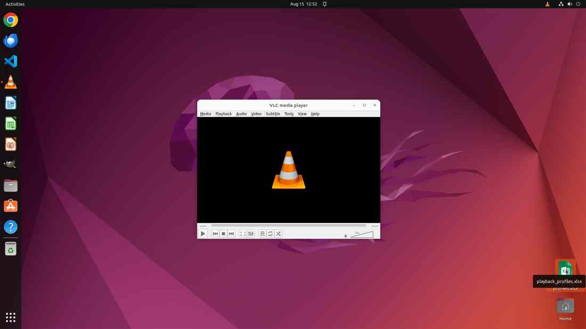
step 2 21:52:11
THINKINGThe double-click selected the file but didn't open it yet. It seems the file is selected. Let me wait for it to open, or double-click again.
ACTIONThe file is now selected. Let me wait for it to open in the spreadsheet application.
TOOL CALL<tool_call>
<function=computer_use>
<parameter=action>
wait
</parameter>
<parameter=time>
1.0
</parameter>
</function>
</tool_call>
EXECUTED (pyautogui in VM)WAIT
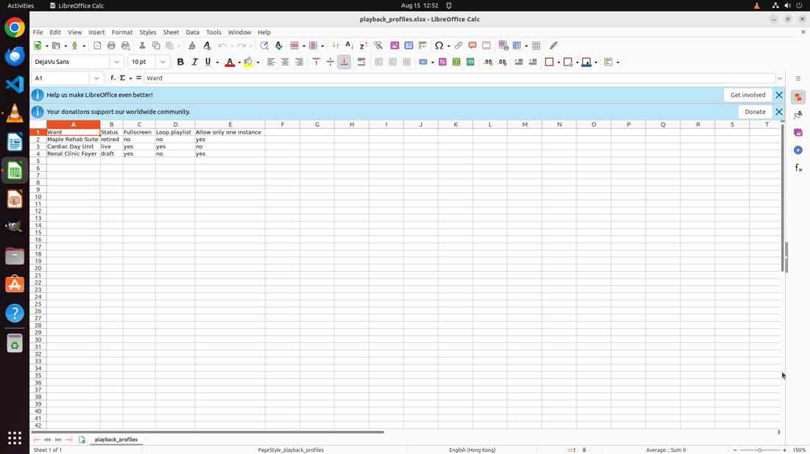
step 3 21:52:39
THINKINGThe spreadsheet is now open in LibreOffice Calc. Let me read the data:
| A (Ward) | B (Status) | C (Fullscreen) | D (Loop playlist) | E (Allow only one instance) |
|---|---|---|---|---|
| Maple Rehab Suite | retired | no | no | yes |
| Cardiac Day Unit | live | yes | yes | no |
| Renal Clinic Foyer | draft | yes | no | yes |
So the profile marked "live" is "Cardiac Day Unit" with:
- Fullscreen: yes
- Loop playlist: yes
- Allow only one instance: no
I need to zoom in to read these more carefully. Let me click on each cell to verify. Actually, let me read the columns carefully.
Row 1 (header): Ward | Status | Fullscreen | Loop playlist | Allow only one instance
Row 2: Maple Rehab Suite | retired | no | no | yes
Row 3: Cardiac Day Unit | live | yes | yes | no
Row 4: Renal Clinic Foyer | draft | yes | no | yes
So the "live" profile is Cardiac Day Unit:
- Fullscreen: yes
- Loop playlist: yes
- Allow only one instance: no
Let me verify by clicking on the cells to be sure. Let me click on C3 to check fullscreen for Cardiac Day Unit.
Actually, the text is a bit small. Let me zoom in to be sure. But I think the reading is clear enough. Let me verify each cell by clicking.
Let me click on B3 to confirm "live".
ACTIONThe spreadsheet is open. I can see a table with ward profiles. Let me read the data carefully by clicking on individual cells to verify. Let me first check the "live" profile row. I'll click on cell B3 to confirm the status.
TOOL CALL<tool_call>
<function=computer_use>
<parameter=action>
left_click
</parameter>
<parameter=coordinate>
[137, 324]
</parameter>
</function>
</tool_call>
EXECUTED (pyautogui in VM)pyautogui.click(263, 350)
step 4 21:52:48
THINKINGB3 shows "live" in the formula bar. So the Cardiac Day Unit (row 3) is the "live" profile.
Now let me verify the values for this row:
- C3 (Fullscreen): appears to be "yes"
- D3 (Loop playlist): appears to be "yes"
- E3 (Allow only one instance): appears to be "no"
Let me click on C3 to confirm.
ACTIONCell B3 shows "live" - so the "Cardiac Day Unit" (row 3) is the live profile. Let me verify the Fullscreen value for this row by clicking C3.
TOOL CALL<tool_call>
<function=computer_use>
<parameter=action>
left_click
</parameter>
<parameter=coordinate>
[172, 324]
</parameter>
</function>
</tool_call>
EXECUTED (pyautogui in VM)pyautogui.click(330, 350)
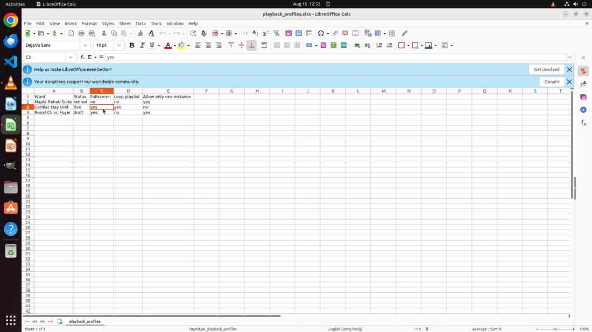
step 5 21:52:57
THINKINGC3 (Fullscreen) shows "yes". Let me check D3 (Loop playlist).
ACTIONC3 (Fullscreen) = "yes". Now let me check D3 (Loop playlist).
TOOL CALL<tool_call>
<function=computer_use>
<parameter=action>
left_click
</parameter>
<parameter=coordinate>
[214, 324]
</parameter>
</function>
</tool_call>
EXECUTED (pyautogui in VM)pyautogui.click(411, 350)
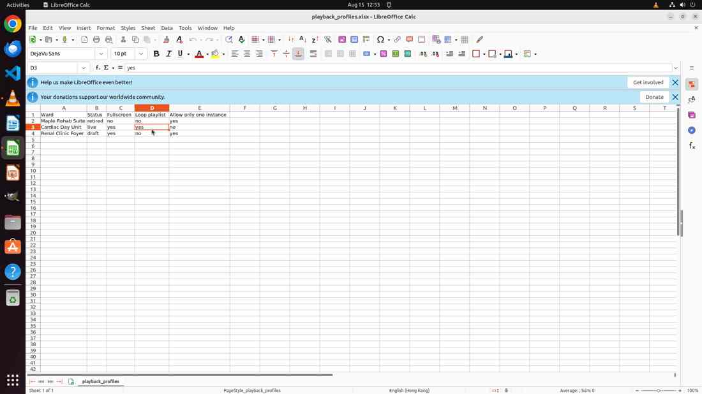
step 6 21:53:14
THINKINGD3 (Loop playlist) shows "yes". Now let me check E3 (Allow only one instance).
ACTIOND3 (Loop playlist) = "yes". Now let me check E3 (Allow only one instance).
TOOL CALL<tool_call>
<function=computer_use>
<parameter=action>
left_click
</parameter>
<parameter=coordinate>
[283, 324]
</parameter>
</function>
</tool_call>
EXECUTED (pyautogui in VM)pyautogui.click(543, 350)
step 7 21:54:03
THINKINGE3 (Allow only one instance) shows "no".
So the "live" profile (Cardiac Day Unit, row 3) is:
- Fullscreen: yes
- Loop playlist: yes
- Allow only one instance: no
Now I need to configure VLC to match these settings:
1. Fullscreen: yes - This means VLC should start in fullscreen mode. Actually, this is a runtime setting. In VLC, there's a setting under Simple Preferences / Video for "Start in fullscreen mode". Let me think about which settings correspond to these.
2. Loop playlist: yes - In VLC preferences, there's "Loop on last item" or "Repeat all" / "Loop" setting. Actually there's a "Repeat all" option in the playback controls. In preferences, under Playback, there might be an option.
3. Allow only one instance: no - This is a setting in VLC preferences under "Show settings" / Simple Preferences / Main interface: "Allow only one instance" (or "One instance only"). This maps to the `one-instance` option.
Let me think about how these map to VLC settings:
1. **Fullscreen: yes** - In VLC, Tools > Preferences > Video, there's "Start in fullscreen mode" checkbox. Or it could be under Simple Preferences > Video.
2. **Loop playlist: yes** - Hmm. In VLC there's a concept of "Loop" (repeat) which loops the current item, and "Repeat all" / loop playlist. Actually the loop button in the playback controls toggles between off, repeat-all, and repeat-one. In preferences, there might not be a direct "loop playlist" setting in simple mode. Actually, there is a setting in Advanced preferences. Let me think.
Actually, in VLC Simple Preferences, under the "Playback" tab, there might be options. Let me recall. The simple preferences tabs are: Interface, Audio, Video, Subtitles, Input/Codecs, Hotkeys.
- Under "Interface": there's "Show settings", "Start VLC in minimal mode", "Check for updates", and importantly "Allow only one instance" (with a dropdown: Disabled, One instance, or "Ask"). Actually the setting is "One instance" with options.
Wait, in newer VLC versions (3.x), under Tools > Preferences (simple mode), the "Interface" tab has:
- Web browser
- Show settings (Simple/All)
- Start and stop
- Start VLC in minimal mode
- Check for updates
- Allow only one instance (dropdown: Disabled / One instance / ...)
Actually, let me recall the exact options. In VLC 3.x simple preferences Interface tab:
- "Show settings" radio: Simple / All
- "Start VLC in minimal mode" checkbox
- "Check for updates on start" checkbox
- "Allow only one instance" - this is a combo box with options "Disabled", "One instance", "One instance (ask)"?
Hmm, actually I recall it's:
- One instance: Disabled
- And there's a "Use one instance" option
Let me just open VLC and look at the preferences.
3. **Fullscreen: yes** - Video tab in simple preferences: "Start in fullscreen mode" checkbox. Actually, I'm not 100% sure this is in simple mode. Let me check. In simple Video preferences there are:
- Video
- Rendering method
- "Start in fullscreen mode" - I think this exists.
Hmm, actually I'm not sure "Start in fullscreen mode" is in the simple video preferences. Let me look.
Actually, I recall in VLC the "Start in fullscreen" is available. Let me just navigate.
Let me approach this systematically. I'll:
1. Close/minimize the spreadsheet (or keep it open in background)
2. Open VLC (it's already running)
3. Go to Tools > Preferences
4. Configure the settings
But wait - I should double check the exact interpretation. The task says "Set this player up to match the ward profile marked live in the playback profiles spreadsheet". So I need to set VLC preferences to:
- Fullscreen: yes
- Loop playlist: yes
- Allow only one instance: no
Let me map these to VLC settings:
1. **Fullscreen: yes** → "Start in fullscreen mode" (Video preferences)
2. **Loop playlist: yes** → "Repeat all" / Loop. In advanced preferences, there's `playlist-loop` (repeat all items). Hmm. Actually, I need to think about where "loop playlist" is.
Actually, in VLC, there are two loop-related settings:
- "Repeat all" (loop the playlist) - the loop button
- In advanced preferences: `--repeat` (loops current item), and the playlist looping is controlled by the "loop" state.
Hmm, this is getting complex. Let me look at what's actually available in the VLC preferences.
Actually, I think the most reliable way is to look at the actual VLC preferences UI and find the corresponding settings. Let me open VLC preferences.
Let me also reconsider - the settings in the spreadsheet map to specific VLC preference options. Let me think about what the task author intended:
- "Fullscreen" → Simple Preferences > Video > "Start in fullscreen mode"
- "Loop playlist" → This is trickier. There might be a "Repeat all" or it might be under Playback.
- "Allow only one instance" → Simple Preferences > Interface > "Allow only one instance"
Let me just open VLC and explore the preferences. First, let me switch to VLC. I'll click on the VLC icon in the taskbar or use the window switcher.
Actually, VLC is already running (I saw it earlier). Let me switch to it. But the LibreOffice window is now on top. Let me look at the taskbar - there's no visible taskbar in GNOME by default. I'll use Activities or the app switcher.
Actually, in GNOME, I can click on "Activities" in the top left to see all windows, or I can use Alt+Tab.
Let me first note down the profile settings clearly:
**Cardiac Day Unit (live):**
- Fullscreen: yes
- Loop playlist: yes
- Allow only one instance: no
Now let me switch to VLC. I'll use the Activities overview or Alt+Tab. Let me use keyboard shortcut to switch. Actually, let me click on Activities.
Wait, but I want to keep the spreadsheet readable in case I need to recheck. That's fine, it will stay open.
Let me switch to VLC. I'll press Super key or click Activities to see windows. Actually, the simplest is to use the top bar. Let me click "Activities".
Hmm, actually there might be an issue. The task says "Set this player up to match the ward profile". The "this player" refers to the VLC media player that's already open. So I should configure that running VLC instance.
Let me open VLC's preferences. I'll switch to the VLC window first.
Let me click on Activities to see all open windows.
ACTIONI now have all the settings for the "live" profile (Cardiac Day Unit, row 3):
- **Fullscreen: yes**
- **Loop playlist: yes**
- **Allow only one instance: no**
Now I need to configure VLC to match these. Let me switch to the VLC window using the Activities overview.
TOOL CALL<tool_call>
<function=computer_use>
<parameter=action>
key
</parameter>
<parameter=keys>
["alt", "tab"]
</parameter>
</function>
</tool_call>
EXECUTED (pyautogui in VM)pyautogui.hotkey("alt", "tab")
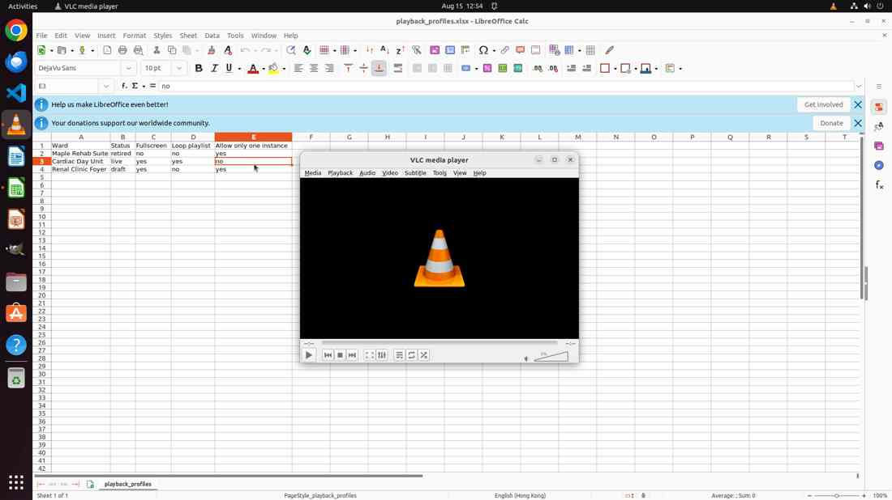
step 8 21:54:12
THINKINGNow VLC is in focus. Let me open its preferences. I'll click on Tools menu.
Actually, let me first maximize the VLC window so I can see the preferences more easily. Or I can just open the preferences dialog. Let me click on Tools menu.
ACTIONVLC is now in focus. Let me open the preferences by clicking on the Tools menu.
TOOL CALL<tool_call>
<function=computer_use>
<parameter=action>
left_click
</parameter>
<parameter=coordinate>
[489, 342]
</parameter>
</function>
</tool_call>
EXECUTED (pyautogui in VM)pyautogui.click(939, 369)
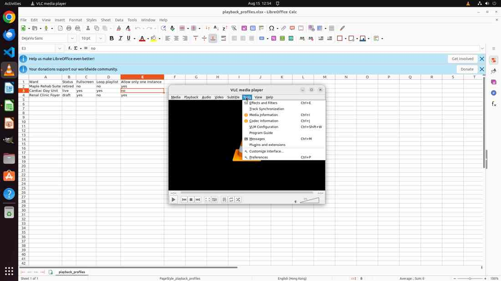
step 9 21:54:20
THINKINGThe Tools menu is open. I can see "Preferences" at the bottom. Let me click on it.
ACTIONThe Tools menu is open. Let me click on "Preferences".
TOOL CALL<tool_call>
<function=computer_use>
<parameter=action>
left_click
</parameter>
<parameter=coordinate>
[515, 556]
</parameter>
</function>
</tool_call>
EXECUTED (pyautogui in VM)pyautogui.click(989, 601)
step 10 21:54:51
THINKINGThe Simple Preferences dialog is now open. I'm on the "Interface" tab. I can see:
Under "Playlist and Instances":
- "Allow only one instance" checkbox - currently UNCHECKED
- "Use only one instance when started from file manager" - currently CHECKED
- "Display playlist tree" - unchecked
The profile requires "Allow only one instance: no" - so this checkbox should be UNCHECKED. It's currently unchecked, so that's already correct.
Wait, let me double check. The checkbox "Allow only one instance" appears unchecked (empty). The profile says "no", so it should be unchecked. Good, this is already set correctly. But let me verify it's actually unchecked by looking closely. The box at [391, 457] appears to have no checkmark, while the one below at [391, 477] "Use only one instance when started from file manager" appears to have a checkmark (✓).
So "Allow only one instance" is currently unchecked = "no". This matches the profile. Good, no change needed there.
Now let me handle:
1. Fullscreen: yes - I need to find this in the Video tab
2. Loop playlist: yes - I need to find this. It might be in the Interface tab or another tab.
Wait, I don't see "Loop playlist" in the Interface tab. Let me think. The loop playlist setting... In VLC, the "loop" / "repeat all" is a playback state, not typically a persistent preference in simple mode. But there might be a setting somewhere.
Actually, let me reconsider. In VLC simple preferences, there's no direct "loop playlist" checkbox that I can see. Let me check the "All" settings mode, or look at other tabs.
Hmm, actually wait. Let me reconsider the mapping. Maybe these spreadsheet columns map to specific VLC settings:
- "Fullscreen" → Video tab, "Start in fullscreen mode"
- "Loop playlist" → ?
- "Allow only one instance" → Interface tab, "Allow only one instance"
For "Loop playlist", I'm not sure where it is. Let me look at the "All" (advanced) settings. In advanced preferences, under "Playlist" or "Main interface", there might be a loop setting.
Actually, I recall that VLC has a concept where in the advanced preferences (All mode), under "Interface" > "Main interface" > "Qt" there are some settings, and under "Playlist" there might be loop settings.
Alternatively, maybe "Loop playlist" maps to a setting I can toggle. Let me think about the VLC command line / preferences:
- `--repeat` : repeat current item (0 = off, 1 = on)
- `--loop` : loop all items (0 = off, 1 = on)
These correspond to "Repeat all" (loop) and "Repeat one" (repeat) buttons in the playback controls.
In the preferences, I'm not sure these are exposed in simple mode. Let me switch to "All" mode to see if there's a loop setting.
Actually, wait. Let me reconsider. Perhaps the intended approach is:
- The task wants me to set these three settings in VLC preferences.
- "Loop playlist" might not be a standard simple preference, but the task author may have intended a specific setting.
Let me first explore the Video tab for the Fullscreen setting, and then figure out Loop playlist.
Actually, let me reconsider whether "Allow only one instance" is the right mapping. Yes, it's clearly "Allow only one instance" in the Interface tab. And it's currently unchecked = "no" which matches. Good.
Let me be careful though. Let me re-examine. The current state:
- "Allow only one instance" - unchecked (no) ✓ matches profile "no"
- "Use only one instance when started from file manager" - checked
The profile only specifies "Allow only one instance: no", so I just need that to be unchecked, which it is. Good.
Now, let me click on the Video tab to find the Fullscreen setting.
Actually, wait. Let me reconsider the whole task. The settings are:
1. Fullscreen: yes
2. Loop playlist: yes
3. Allow only one instance: no
For a clean approach, maybe I should use the advanced "All" preferences to find exact matches, OR I could directly edit the VLC config file (~/.config/vlc/vlcrc). But the task says "then quit VLC so the settings are written", which implies I should set them via the GUI and then quit so they get written to vlcrc.
Actually, editing vlcrc directly would also work and would be written immediately. But the instruction "quit VLC so the settings are written" strongly implies the GUI approach where settings are held in memory and written on quit. So I'll use the GUI.
Let me proceed with the GUI. Let me first handle the Interface tab since I'm here:
- "Allow only one instance" should be unchecked (no). It's already unchecked. Good.
But wait, I should double-check it's truly unchecked. Let me zoom in mentally: the checkbox at row 457 for "Allow only one instance" looks empty. The one at 477 "Use only one instance when started from file manager" has a check. So yes, "Allow only one instance" is unchecked.
Hmm, but actually I want to be careful. Let me verify by looking more closely. Actually, I'll trust the current view but I could click to verify. Let me not change it since it's already correct.
Actually, to be safe and explicit, let me make sure. The profile says "no", and the checkbox is unchecked. So it's already in the correct state. I'll leave it.
Now let me go to the Video tab for Fullscreen.
Let me click on "Video".
ACTIONThe Simple Preferences dialog is open on the Interface tab. I can see the "Playlist and Instances" section with:
- "Allow only one instance" - currently **unchecked** (which matches the profile's "no") ✓
- "Use only one instance when started from file manager" - checked
The "Allow only one instance" is already unchecked, matching the profile. Let me verify it's truly unchecked by examining it closely. Let me first check the Video tab for the Fullscreen setting.
TOOL CALL<tool_call>
<function=computer_use>
<parameter=action>
left_click
</parameter>
<parameter=coordinate>
[404, 250]
</parameter>
</function>
</tool_call>
EXECUTED (pyautogui in VM)pyautogui.click(776, 270)
step 11 21:55:05
THINKINGHmm, I clicked on "Video" tab but it still shows "Interface Settings". The tab might not have switched. Wait, the title still says "Interface Settings" and the content is the same. Maybe I didn't click precisely on the Video tab icon. Let me look - the tabs are: Interface (394), Audio (454), Video (518), Subtitles/OSD (587), Input/Codecs (658), Hotkeys (716).
I clicked at [518, 178] which should be Video. But the content didn't change. Maybe the click registered on the icon but the panel needs a moment, or maybe I clicked slightly off. Let me click again on the Video tab, maybe a bit higher on the icon.
Actually, looking again, the "Video" tab icon is at around [518, 170] and the label "Video" is at [518, 199]. Let me click directly on the "Video" text label.
ACTIONThe tab didn't switch. Let me click directly on the "Video" tab label.
TOOL CALL<tool_call>
<function=computer_use>
<parameter=action>
left_click
</parameter>
<parameter=coordinate>
[404, 264]
</parameter>
</function>
</tool_call>
EXECUTED (pyautogui in VM)pyautogui.click(776, 285)
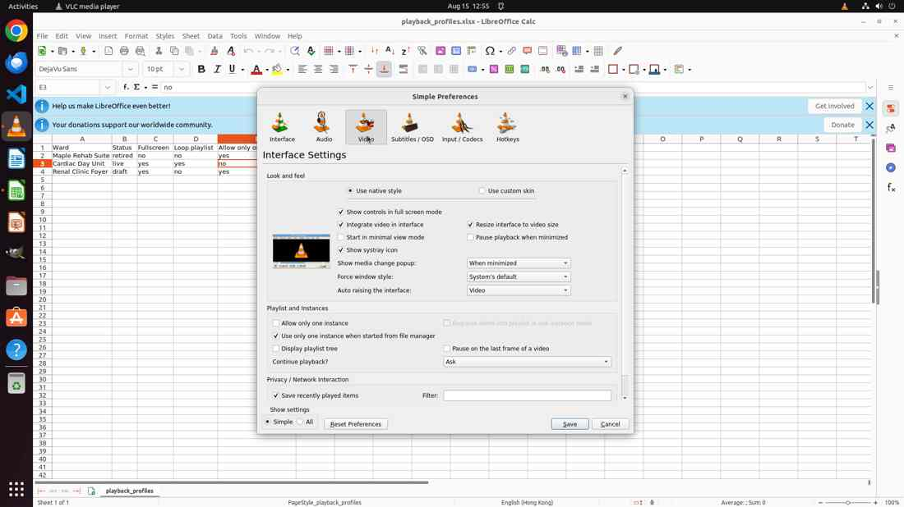
step 12 21:55:22
THINKINGStill showing "Interface Settings". The tab isn't switching. It seems the click isn't registering on the Video tab properly. Maybe the tab buttons require clicking precisely. Let me look at the tab layout again. The tabs are icons at the top with labels below. The "Video" tab icon appears to be at around [518, 168] and the label "Video" is at [518, 199].
Wait, maybe the issue is that these tabs work but the panel title still says "Interface Settings" as a leftover? No, that doesn't make sense.
Let me try clicking more precisely. Actually, maybe I need to click on the icon part. Let me try clicking at [518, 165] which is the icon.
Actually, wait. Let me reconsider. Maybe the click IS working but the display is slow. But two clicks both show Interface. That's odd.
Let me try a different approach - click directly on the icon center. The Video icon is the one that looks like a film/cone. Let me click at [518, 170].
Hmm, actually, maybe the tabs in VLC simple preferences respond to single clicks but I'm hitting between tabs. Let me look at the x-coordinates:
- Interface: 394
- Audio: 454
- Video: 518
- Subtitles / OSD: 587
- Input / Codecs: 658
- Hotkeys: 716
The spacing is about 60-70px. [518] should be Video.
Let me try clicking on the icon area which is higher up, around y=165.
ACTIONThe tab still shows Interface. Let me click more precisely on the Video icon itself.
TOOL CALL<tool_call>
<function=computer_use>
<parameter=action>
left_click
</parameter>
<parameter=coordinate>
[404, 231]
</parameter>
</function>
</tool_call>
EXECUTED (pyautogui in VM)pyautogui.click(776, 249)
step 13 21:55:36
THINKINGThe tab still shows "Interface Settings". This is strange. The clicks on the Video tab are not switching the panel.
Wait, maybe the panel header "Interface Settings" is just a static title that doesn't update? No, that would be a bug.
Let me reconsider. Maybe the tab IS highlighted but the content area shows Interface because... no.
Actually, let me look very carefully. In the screenshot, the "Video" tab icon (at 518, 168) appears to have a border/highlight around it now (it looks like it has a box around it). But the content still says "Interface Settings".
Hmm, this is confusing. Let me try clicking on the "Audio" tab to test if tabs work at all.
Actually, wait. Let me reconsider. Maybe the issue is that the panel content is scrolled or the header is separate. Let me try clicking on "Audio" tab to see if the content changes.
Actually, maybe there's a rendering issue. Let me try clicking Audio tab.
ACTIONThe tab panel still shows Interface Settings. Let me test by clicking on the "Audio" tab to see if tabs respond.
TOOL CALL<tool_call>
<function=computer_use>
<parameter=action>
left_click
</parameter>
<parameter=coordinate>
[354, 241]
</parameter>
</function>
</tool_call>
EXECUTED (pyautogui in VM)pyautogui.click(680, 260)
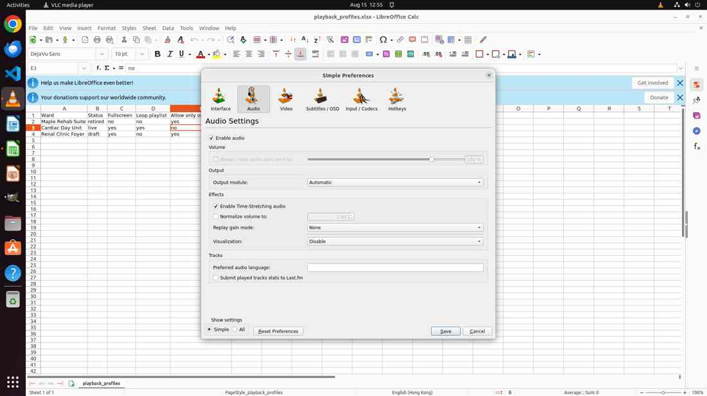
step 14 21:55:51
THINKINGNow the Audio tab works and shows "Audio Settings". So the tabs do work. The earlier clicks on Video must have been slightly off, or there was a delay. Let me now click on the Video tab again.
ACTIONThe tabs work now - it shows "Audio Settings". Now let me click on the Video tab to find the Fullscreen setting.
TOOL CALL<tool_call>
<function=computer_use>
<parameter=action>
left_click
</parameter>
<parameter=coordinate>
[404, 241]
</parameter>
</function>
</tool_call>
EXECUTED (pyautogui in VM)pyautogui.click(776, 260)
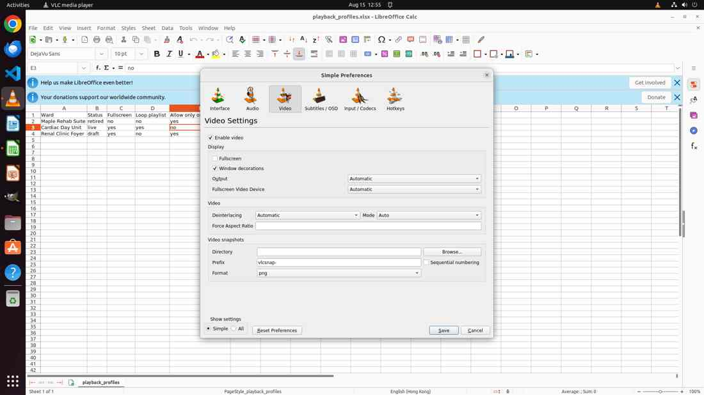
step 15 21:56:06
THINKINGNow I'm on the "Video Settings" tab. I can see:
- Display section:
- "Fullscreen" checkbox - currently UNCHECKED
- "Window decorations" - checked
- Output: Automatic
- Fullscreen Video Device: Automatic
The profile requires Fullscreen: yes. So I need to CHECK the "Fullscreen" checkbox.
Let me click on the "Fullscreen" checkbox at [391, 288].
ACTIONNow I'm on the "Video Settings" tab. I can see the "Fullscreen" checkbox under "Display" - it's currently **unchecked**. The profile requires Fullscreen = "yes", so I need to check it. Let me click on the Fullscreen checkbox.
TOOL CALL<tool_call>
<function=computer_use>
<parameter=action>
left_click
</parameter>
<parameter=coordinate>
[304, 399]
</parameter>
</function>
</tool_call>
EXECUTED (pyautogui in VM)pyautogui.click(584, 431)
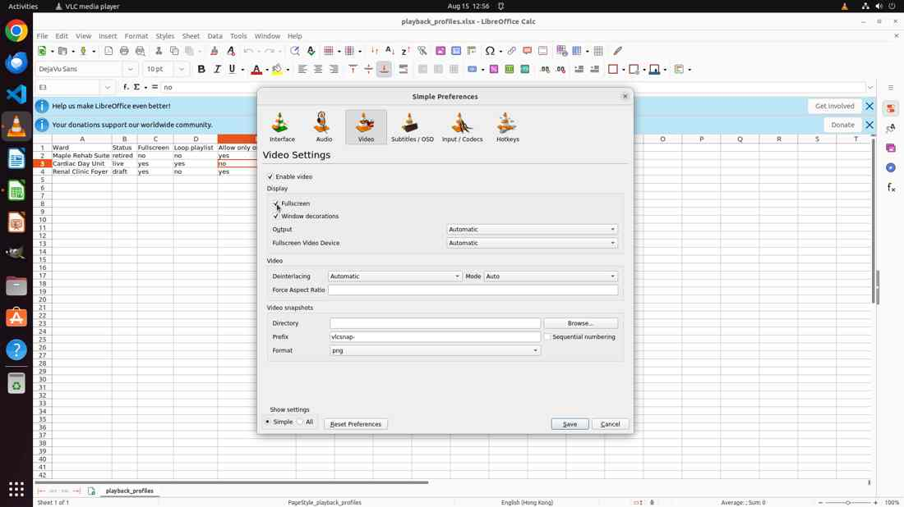
step 16 21:56:28
THINKINGNow the "Fullscreen" checkbox appears to be checked (there's a checkmark next to it). Let me verify by zooming in. The checkbox at [391, 288] now shows a checkmark.
Fullscreen: now checked = yes ✓
Now I need to handle "Loop playlist: yes". This is not in the simple preferences tabs that I've seen. Let me think about where this is.
The simple preference tabs are: Interface, Audio, Video, Subtitles/OSD, Input/Codecs, Hotkeys. None of these have a "Loop playlist" option that I've seen.
Hmm. So "Loop playlist" might be in the "All" (advanced) settings. Let me switch to "All" mode by clicking the "All" radio button at the bottom.
Actually, wait. Let me reconsider. In VLC, the "loop" is a playback mode. There's a "Repeat all" button in the playback controls. But as a persistent setting...
Let me think about where "loop playlist" could be configured persistently:
1. In the advanced preferences (All mode), under "Playlist" section, there might be a "Repeat all items" or loop setting.
2. In the advanced preferences under "Main interface" > "Qt", there might be a setting.
Actually, I recall that in VLC's advanced preferences, under "Playlist" there is a section. Let me check.
Alternatively, the mapping might be:
- "Loop playlist" = the "Repeat all" state which is stored as a setting.
Hmm, let me switch to "All" settings and search for "loop" or "repeat".
Actually, let me reconsider the whole approach. Maybe the task expects me to set these in a specific way. Let me look at the "All" settings.
Let me click on the "All" radio button to switch to advanced preferences.
Wait, before that, let me reconsider whether "Loop playlist" is a simple preference. Let me think... Actually in some VLC versions, there's no "loop playlist" in simple prefs. It's a runtime toggle. But there might be a way to set it as default.
Let me switch to All settings and look. Click "All" radio at [426, 599].
Actually, let me first double check the Fullscreen is checked. It looks checked. Let me proceed to find Loop playlist.
Let me switch to "All" (advanced) settings.
ACTIONThe "Fullscreen" checkbox is now checked. Now I need to find the "Loop playlist" setting. This isn't in the simple preferences tabs, so let me switch to the "All" (advanced) settings by clicking the "All" radio button.
TOOL CALL<tool_call>
<function=computer_use>
<parameter=action>
left_click
</parameter>
<parameter=coordinate>
[332, 830]
</parameter>
</function>
</tool_call>
EXECUTED (pyautogui in VM)pyautogui.click(638, 897)
step 17 21:56:54
THINKINGThe title now says "Advanced Preferences" and the "All" radio is selected. However, the content area still shows the simple Video settings with the tab bar (Interface, Audio, Video, etc.). Wait, actually the "Advanced Preferences" mode should show a tree view on the left side. But I see the same simple tabs. Hmm.
Actually, I think clicking "All" should have changed the layout to show a tree of all settings on the left. But it still shows the tab-based simple view. Maybe it's still transitioning, or maybe I need to wait.
Wait, actually the title bar says "Advanced Preferences" now and "All" is selected. But the content looks the same (Video Settings with tabs). This is strange.
Hmm, in VLC, when you switch from Simple to All mode, the layout changes significantly - it shows a tree of categories on the left and the settings for the selected category on the right. But here it still shows the tab interface.
Maybe the change takes a moment to render. Let me take a screenshot to see the current state.
Actually, let me reconsider. Maybe in this VLC version, the "All" mode just expands the same tabs with more options, OR the layout is different. Let me take a screenshot to see.
Actually the screenshot shows the same Video Settings. Let me wait a moment and re-screenshot. Or maybe I need to click on the Interface tab in the advanced view to see the tree.
Let me click on the Interface tab to see the advanced interface settings, which should have a tree view.
Actually, let me reconsider my whole approach. The "All" (advanced) preferences in VLC show a tree of options on the left. Let me click on the "Interface" tab/icon to see the advanced interface tree, where I can navigate to find "loop" settings.
Actually, I realize the advanced preferences in VLC 3.x do still use the same tab structure (Interface, Audio, Video, Subtitles, Input/Codecs, Hotkeys) but each tab now has a tree of detailed settings on the left. So the tabs remain but the content changes to a tree-based detailed view.
But currently it still shows the simple Video settings. Maybe the switch didn't fully take effect. Let me take a screenshot.
Let me click on the Interface tab to navigate to the advanced interface settings where I can find the playlist loop options.
Actually, wait. Let me reconsider. Let me first re-screenshot to see the current state clearly.
ACTIONThe dialog now shows "Advanced Preferences" with "All" selected, but the content still shows the simple view. Let me take a screenshot to see the current state clearly.
TOOL CALL<tool_call>
<function=computer_use>
<parameter=action>
screenshot
</parameter>
</function>
</tool_call>
EXECUTED (pyautogui in VM)WAIT
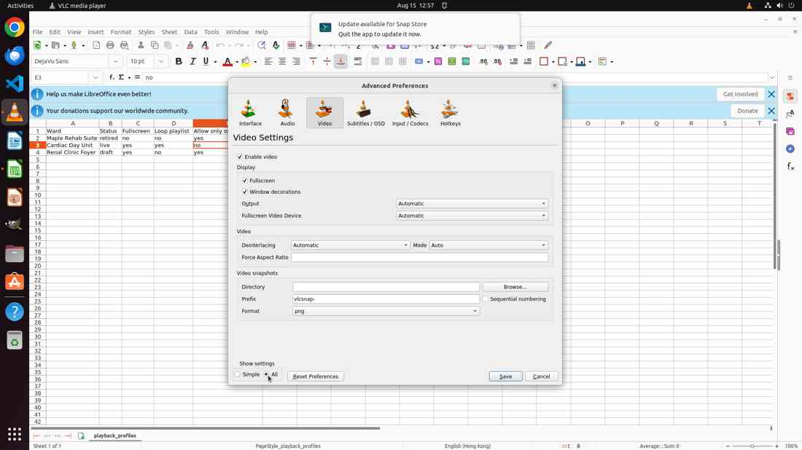
step 18 21:57:15
THINKINGThe dialog still shows the simple Video Settings even though "All" is selected and the title says "Advanced Preferences". The content didn't change to the tree view. This is odd.
There's also a notification "Update available for Snap Store" at the top - I'll ignore that.
Maybe the advanced preferences tree view needs the window to be larger, or maybe clicking on a tab will trigger the change. Let me click on the Interface tab to see the advanced interface settings.
Actually, I wonder if the "All" mode in this VLC version requires resizing the dialog or if the tree appears on click. Let me click on the "Interface" tab.
Hmm, actually, wait. Let me reconsider. In VLC 3.0.x, the "Advanced Preferences" (All) shows a two-pane layout: a tree on the left and settings on the right. But the top still has those 6 category tabs. When you click "All", the whole content area should switch to show the tree.
But it's not switching. This might be a rendering quirk. Let me try clicking on the Interface tab now (in All mode) to force a re-render.
Actually, maybe the issue is that the dialog needs to be resized or the tree is just not showing. Let me click Interface tab.
ACTIONThe dialog shows "Advanced Preferences" but the content hasn't updated to the tree view yet. There's also a Snap Store notification I'll ignore. Let me click on the Interface tab to see the advanced settings tree.
TOOL CALL<tool_call>
<function=computer_use>
<parameter=action>
left_click
</parameter>
<parameter=coordinate>
[311, 241]
</parameter>
</function>
</tool_call>
EXECUTED (pyautogui in VM)pyautogui.click(597, 260)
step 19 21:57:38
THINKINGNow the Advanced Preferences tree view is showing. There's a search box at the top left (empty), and a tree on the left with categories:
- Advanced
- GNU TLS
- Logger
- Network Sync
- syslog
- Audio
- Audio resampler
- Filters
- Output modules
- Visualizations
- Input / Codecs
- Access modules
- Audio codecs
- Demuxers
- Stream filters
- Subtitle codecs
- Video codecs
- Interface
- Control interfaces
- Hotkeys settings
- (more below)
There's a search box at the top. I can use it to search for "loop" to find the loop playlist setting. Let me type "loop" in the search box.
Actually, the search box at the top-left (at [495, 167]) is for filtering the tree. Let me type "loop" there.
Wait, but there's a checkbox "Only show current" next to it. Let me just type in the search box.
Let me click on the search box and type "loop".
Actually, I recall the loop setting in VLC. The advanced preference for loop playlist is `playlist-loop` (Repeat all items). Let me search for "loop".
Actually, let me reconsider. The loop playlist setting in VLC... Let me think about what settings exist:
- In the "Main interface" or under some section, there's "Repeat all items" / loop.
Actually, I'm now in the advanced tree. Let me use the search box. Let me type "loop".
Let me click the search box first.
ACTIONNow the Advanced Preferences tree view is showing with a search box at the top. Let me use the search box to find the "loop" setting. I'll click on the search box and type "loop".
TOOL CALL<tool_call>
<function=computer_use>
<parameter=action>
left_click
</parameter>
<parameter=coordinate>
[382, 230]
</parameter>
</function>
</tool_call>
EXECUTED (pyautogui in VM)pyautogui.click(734, 248)
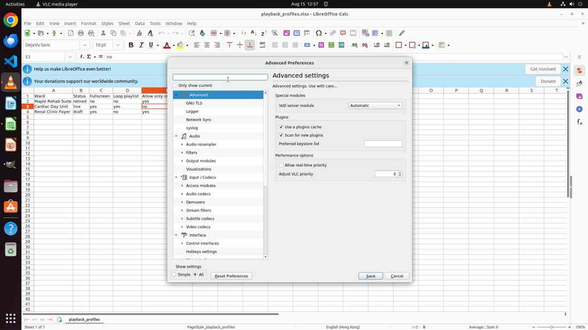
step 20 21:57:53
THINKINGThe search box is now focused (I see a cursor in it). Let me type "loop" to filter the tree.
ACTIONThe search box is focused. Let me type "loop" to filter the settings tree.
TOOL CALL<tool_call>
<function=computer_use>
<parameter=action>
type
</parameter>
<parameter=text>
loop
</parameter>
</function>
</tool_call>
EXECUTED (pyautogui in VM)pyautogui.typewrite("loop")
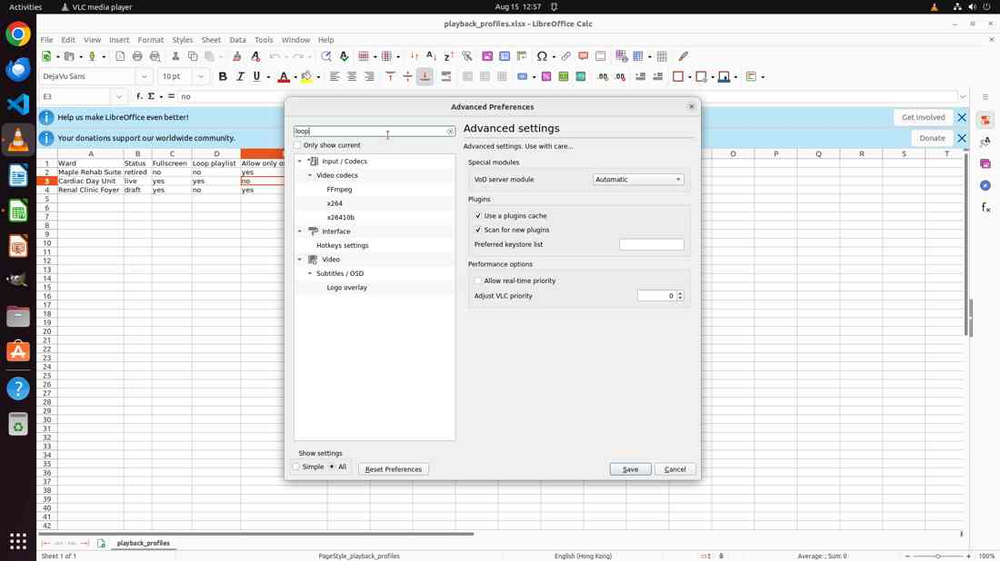
step 21 21:58:18
THINKINGHmm, the search for "loop" filtered the tree, but the results shown are categories, not specific settings. The tree shows:
- Input / Codecs
- Video codecs
- FFmpeg
- x264
- x26410b
- Interface
- Hotkeys settings
- Video
- Subtitles / OSD
- Logo overlay
This doesn't seem to directly show a "loop" setting. The search might be matching category names or the search filters the tree to show items whose name contains "loop". But I don't see a clear "loop playlist" item.
Hmm, wait. The search in VLC advanced preferences filters to show only items matching the text. The items shown are: FFmpeg, x264, x26410b, Hotkeys settings, Video, Subtitles/OSD, Logo overlay. These don't obviously contain "loop".
Wait, maybe the search matches the full path or description. Actually, I think the search is showing the parent categories of matching items. Let me look more carefully. The "Only show current" checkbox is unchecked.
Actually, maybe "loop" as a term matches "Logo overlay"? No. Or maybe the search is matching description text.
Hmm, this search approach isn't giving me a clear "loop playlist" result. Let me reconsider.
Actually, in VLC, the "Repeat all" / loop is not a persistent preference that I can easily find. Let me reconsider the task.
Wait, let me reconsider the mapping. Maybe "Loop playlist" doesn't map to an advanced preference at all. Let me think about what "loop playlist" means and where it's set.
Actually, maybe I'm overcomplicating this. Let me reconsider the three columns:
- Fullscreen
- Loop playlist
- Allow only one instance
These are three high-level settings. The task is to configure VLC to match.
For "Loop playlist", in VLC the concept is the "Repeat all" mode. But is there a persistent setting?
Actually, I wonder if the search is showing items that CONTAIN "loop" in their long description. Let me expand the tree items. Let me click on "Video" or look for a playlist section.
Actually, let me clear the search and look for "Playlist" or "Repeat" instead.
Let me clear the search box and search for "repeat".
Actually, wait. Let me reconsider. The search filtered to specific items. Let me look at what's under "Interface" - "Hotkeys settings". And the categories Input/Codecs, Video, Subtitles/OSD. These are just the parent categories of items matching "loop".
Hmm, but which items match "loop"? Let me expand. Actually, the search shows leaf items whose name or description contains "loop". The visible leaves are: FFmpeg, x264, x26410b, Hotkeys settings, Logo overlay.
Wait, that doesn't make sense for "loop". Unless the search matches the description. E.g., x264 description might mention "loop" (like GOP loop?). And "Logo overlay" ... no.
Let me try a different search term. Let me clear and search "repeat".
Actually, let me reconsider. Maybe the search matches item names AND the search is showing the full paths. Let me clear and try "playlist".
Let me clear the search box first. I'll select all and delete, or click the clear button (x) at [574, 167].
Let me click the clear button.
ACTIONThe search for "loop" shows some categories but not a clear "loop playlist" item. Let me clear the search and try a different term. Let me click the clear button in the search box.
TOOL CALL<tool_call>
<function=computer_use>
<parameter=action>
left_click
</parameter>
<parameter=coordinate>
[447, 230]
</parameter>
</function>
</tool_call>
EXECUTED (pyautogui in VM)pyautogui.click(859, 248)
step 22 21:59:05
THINKINGThe search box is now cleared (shows "Search" placeholder) but the tree still shows the filtered results from "loop". The tree still shows:
- Input / Codecs
- Video codecs
- FFmpeg
- x264
- x26410b
- Interface
- Hotkeys settings
- Video
- Subtitles / OSD
- Logo overlay
Wait, the search box is cleared but the tree didn't update. That's odd. Maybe the tree filter persists until I type again or the clear didn't fully work. Actually, the tree still shows filtered results because clearing might not have triggered a refresh. Let me type a new search term.
Actually, I realize the search box shows "Search" placeholder which means it's empty. But the tree still shows the old filter. This is strange. Maybe I need to click elsewhere or the tree updates on the next keystroke.
Let me reconsider my approach entirely. The "loop" search showed these items. The interesting one might be under "Video" or somewhere. But "loop playlist" as a persistent setting...
Actually, let me step back and think about this differently.
The task: "Set this player up to match the ward profile marked live". The three settings are Fullscreen, Loop playlist, Allow only one instance.
I've set:
- Fullscreen: yes (checked in Video tab) ✓
- Allow only one instance: no (already unchecked in Interface tab) ✓
- Loop playlist: yes - ???
For "Loop playlist", I need to find the right setting. Let me think about VLC's loop options:
1. There's the "Repeat all" button (loop) in the playback controls - toggles playlist looping.
2. There's the "Repeat" button (repeat one) in playback controls.
In the preferences (advanced), the relevant settings might be:
- Under "Main interface" > "Qt" - there might be a "Repeat all items" or loop state? Probably not.
Actually, I don't think VLC persists the loop state in preferences by default. The loop state is a runtime playback state.
Hmm, wait. Let me reconsider. Maybe "Loop playlist" doesn't correspond to a preference at all but to a playback control that I should toggle in the main VLC window (the "Repeat all" button).
But the task says "then quit VLC so the settings are written". This implies settings written to a config file (vlcrc). The loop state via the button wouldn't be written to vlcrc.
Hmm, let me reconsider. Actually, maybe there IS a preference. Let me think about the vlcrc file. There's a setting called:
- `--repeat` : "Repeat all items" - wait no.
Let me recall VLC's loop/repeat options:
- `--repeat` (repeat): "Repeat current item" - value 0 or 1. Actually this is "Repeat one".
- `--loop` (loop): "Loop infinitely" - loops the playlist.
Wait, actually in VLC:
- `--loop N`: Loops N times over the current playlist. If 0, no looping. If -1 or high, infinite.
- `--repeat N`: Loops N times over the current item.
Hmm, but these are more about the number of times.
Actually, in the advanced preferences, there's a setting. Let me search for "repeat" and "loop" more carefully.
Actually, let me reconsider. The search "loop" showed those items. Maybe I need to expand them. Let me look - the tree shows "Video" as a category. Let me expand "Video" to see if there's a loop setting.
Wait, actually the search results should show LEAF items (individual settings) that match "loop". The items shown as leaves: x264, x26410b, Hotkeys settings, Logo overlay. These are the matching items? That's weird because they don't contain "loop" in their names.
Oh wait, I think I misread. Let me reconsider. The search "loop" probably matches the DESCRIPTION of the setting, and shows the setting items. So x264, x26410b, Hotkeys settings, Logo overlay might have "loop" in their descriptions. That's not helpful.
Let me try a cleaner approach. Let me look at the "Main interface" section which is under "Interface". In the full tree, under "Interface" there should be "Main interface" and then "Qt" and so on.
Actually, let me reconsider the entire problem. Maybe "Loop playlist" is best interpreted as the "Repeat all" mode which is controlled by the loop button. But that's not a persistent setting.
Alternatively, maybe the task intends for me to find these as actual VLC preference settings. Let me search for "playlist" in the advanced preferences to find playlist-related settings.
Let me type "playlist" in the search box. But first, the search box shows "Search" (empty) but tree still filtered. Let me click in the search box and type.
Actually, wait. I'm now doubting whether there's a persistent "loop playlist" preference. Let me reconsider by searching for "repeat".
Let me click in the search box and type "repeat".
Hmm, actually, let me reconsider the problem from a different angle.
The three settings might map to:
1. Fullscreen → `--fullscreen` / video-fullscreen
2. Loop playlist → `--loop`
3. Allow only one instance → `--one-instance`
And in the advanced preferences UI:
1. Fullscreen → Video tab "Fullscreen" checkbox (done)
2. Loop playlist → ?
3. Allow only one instance → Interface tab "Allow only one instance" checkbox
For #2, let me look in the advanced preferences. There might be a "Repeat all items" or similar.
Actually, I just realized - in VLC, there's a setting under the "Main interface" > "Qt" section? No.
Let me think about where "loop" appears in vlcrc. The option `--loop` is described as "Loop infinitely". Its default is... hmm. Actually, I don't think it's exposed in the simple prefs.
Let me just search in the advanced preferences. Let me type "repeat" first.
Actually, let me reconsider. The "Only show current" checkbox - if I check it, the search might filter to only settings matching, hiding categories. Let me first clear the current filter properly and search "repeat".
Let me click on the search box and type "repeat".
ACTIONThe tree still shows the old filter. Let me click in the search box and search for "repeat" to find the loop/repeat playlist setting.
TOOL CALL<tool_call>
<function=computer_use>
<parameter=action>
left_click
</parameter>
<parameter=coordinate>
[375, 230]
</parameter>
</function>
</tool_call>
EXECUTED (pyautogui in VM)pyautogui.click(720, 248)
step 23 21:59:15
THINKINGThe search box is now empty and focused. Let me type "repeat" to find repeat/loop settings.
ACTIONLet me type "repeat" to search for repeat/loop settings.
TOOL CALL<tool_call>
<function=computer_use>
<parameter=action>
type
</parameter>
<parameter=text>
repeat
</parameter>
</function>
</tool_call>
EXECUTED (pyautogui in VM)pyautogui.typewrite("repeat")
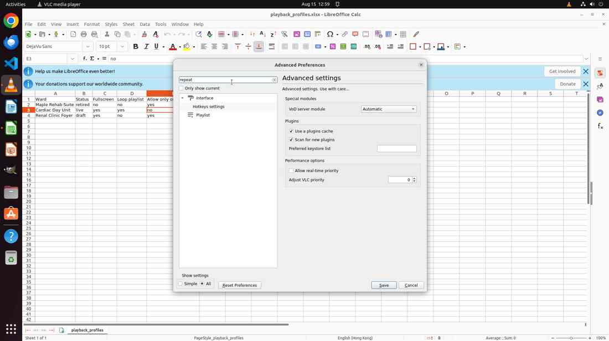
step 24 21:59:33
THINKINGNow the search for "repeat" shows:
- Interface
- Hotkeys settings
- Playlist
There's a "Playlist" category! Let me click on "Playlist" to see the playlist-related settings, which should include the loop setting.
ACTIONThe search for "repeat" shows a "Playlist" category. Let me click on "Playlist" to see its settings, which should include the loop option.
TOOL CALL<tool_call>
<function=computer_use>
<parameter=action>
left_click
</parameter>
<parameter=coordinate>
[332, 334]
</parameter>
</function>
</tool_call>
EXECUTED (pyautogui in VM)pyautogui.click(638, 361)
step 25 22:00:14
THINKINGNow I can see the Playlist settings panel with "General playlist behaviour":
- Play files randomly forever (unchecked)
- Repeat all (unchecked)
- Repeat current item (unchecked)
- Play and exit (unchecked)
- Play and stop (unchecked)
- Play and pause (unchecked)
- Start paused (unchecked)
- Auto start (checked)
- Pause on audio communication (checked)
- Allow only one running instance (unchecked)
- Use only one instance when started from file manager (checked)
- Enqueue items into playlist in one instance mode (unchecked)
- Expose media player via D-Bus (unchecked)
- Use media library (unchecked)
- Display playlist tree (unchecked)
- Default stream: (empty)
- Automatically prepare items (checked)
- Preparing timeout: 5000
- Allow metadata network access (checked)
- Subdirectory behavior: Collapse
So "Loop playlist" = "Repeat all" checkbox. This is the setting that loops the entire playlist. Currently it's UNCHECKED. The profile requires "Loop playlist: yes", so I need to CHECK "Repeat all".
Interesting - this "Playlist" panel also has "Allow only one running instance" and "Use only one instance when started from file manager". So "Allow only one instance" could be either the Interface tab's "Allow only one instance" or this "Allow only one running instance". They might be the same underlying setting (`one-instance`).
Let me focus on "Repeat all" for the loop playlist setting. Let me check the "Repeat all" checkbox at [604, 228].
Wait, but let me reconsider. "Loop playlist" - which is it, "Repeat all" or "Repeat current item"?
- "Repeat all" loops the entire playlist (plays all items, then starts over).
- "Repeat current item" repeats only the current item.
"Loop playlist" clearly means looping the whole playlist = "Repeat all". So I'll check "Repeat all".
Let me click on "Repeat all" checkbox at [604, 228].
Actually, wait. Let me reconsider whether "Repeat all" is the right mapping vs. some other loop setting. In VLC, the "Repeat all" button in the playback controls is the "loop" mode that loops the entire playlist. When you click the loop button, it becomes "Repeat all" (loop playlist). So "Loop playlist" = "Repeat all". Yes.
Let me check "Repeat all".
ACTIONI found the Playlist settings. Under "General playlist behaviour" I can see:
- **Repeat all** (unchecked) - this is the "loop playlist" setting
- Repeat current item (unchecked)
The profile requires "Loop playlist: yes", which corresponds to "Repeat all". Let me check the "Repeat all" checkbox.
TOOL CALL<tool_call>
<function=computer_use>
<parameter=action>
left_click
</parameter>
<parameter=coordinate>
[471, 316]
</parameter>
</function>
</tool_call>
EXECUTED (pyautogui in VM)pyautogui.click(905, 341)
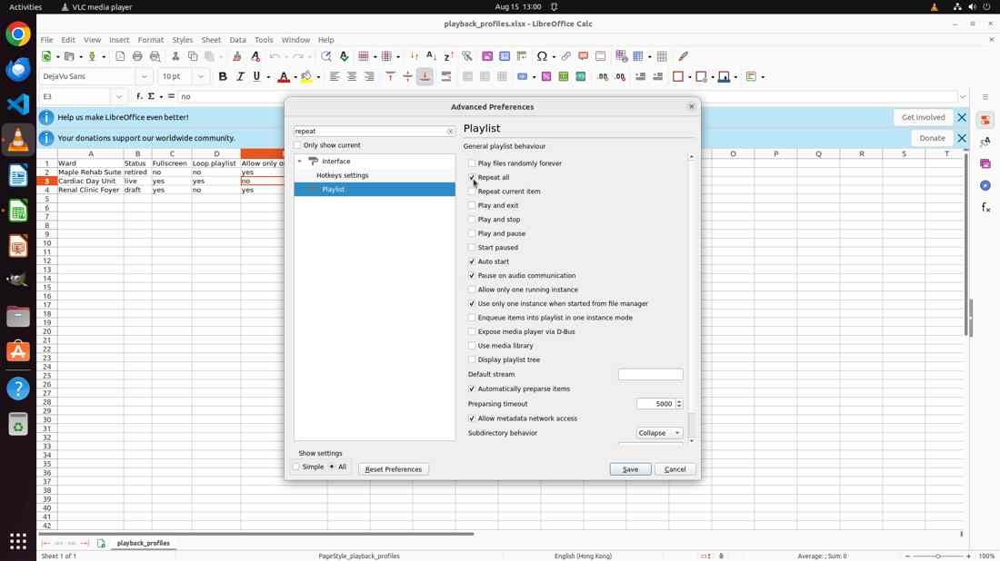
step 26 22:01:29
THINKINGNow "Repeat all" is checked (I see the checkmark next to it).
So now I've set:
- Fullscreen: yes (checked in Video tab) ✓
- Loop playlist: yes (Repeat all checked) ✓
- Allow only one instance: no (already unchecked in Interface tab) ✓
Now, about "Allow only one instance: no". In this Playlist panel, there's "Allow only one running instance" which is unchecked. And in the Interface simple tab, there was "Allow only one instance" which was unchecked. These should be the same setting (`one-instance`). Both are unchecked = "no". Good, that matches.
Wait, but I should double check that the "Allow only one instance" is genuinely "no". Let me reconsider. The profile says "Allow only one instance: no". In the Interface tab (simple mode), the "Allow only one instance" checkbox was unchecked. In this Playlist panel, "Allow only one running instance" is unchecked. Both represent the same `one-instance` preference. So "no" = unchecked. Already correct.
But wait, let me reconsider. There might be a subtlety. In VLC:
- `one-instance`: When enabled, a single VLC instance handles multiple files.
- `one-instance-ask`: Ask whether to enqueue in the existing instance.
- `one-instance-when-started-from-file-manager` (intf-one-instance):
Actually the "Allow only one instance" in the Interface simple tab maps to `one-instance`. And "Allow only one running instance" in the Playlist panel is the same `one-instance` setting. And "Use only one instance when started from file manager" maps to `one-instance-when-started-from-file-manager`.
So "Allow only one instance: no" = `one-instance` = false = unchecked. Both places show unchecked. Good.
Now, I've made all three settings:
1. Fullscreen: yes ✓
2. Loop playlist (Repeat all): yes ✓
3. Allow only one instance: no ✓ (already was)
But wait, I should double-check the "Allow only one instance" setting is actually "no" and I didn't misread. Let me reconsider - actually the task is to MATCH the profile. The profile is "no". Currently it's unchecked ("no"). So it already matches and I don't need to change it. But to be safe, maybe I should explicitly verify it. However, changing it would risk making it wrong. Let me just verify by looking - it's unchecked, which is "no". Correct.
Actually, hold on. Let me reconsider whether the "Allow only one instance" in the simple Interface tab and "Allow only one running instance" here are truly the same. In the simple Interface tab, I saw:
- "Allow only one instance" (unchecked)
- "Use only one instance when started from file manager" (checked)
In this Playlist panel:
- "Allow only one running instance" (unchecked)
- "Use only one instance when started from file manager" (checked)
Yes, these correspond to the same two settings. So "Allow only one instance" = "Allow only one running instance" = `one-instance`, which is unchecked = "no". Good.
Now I need to be careful: the profile says "Allow only one instance: no", and it's currently unchecked. So I'm good. But let me reconsider - is it possible the task expects me to actively set it to "no" even though it's already "no"? The result is the same. Since it's already "no", I don't need to change it. But to be thorough and make sure the final state is correct, I'll leave it as is (unchecked = no).
Actually, wait. I want to be extra careful here. Let me re-examine. When I first opened the Interface tab, "Allow only one instance" was unchecked and "Use only one instance when started from file manager" was checked. This matches the profile "no". Good.
Hmm, but actually, I realize I should double-check my reading of the profile. Let me re-verify the profile values once more:
- Cardiac Day Unit (live): Fullscreen=yes, Loop playlist=yes, Allow only one instance=no
Yes. And my settings now:
- Fullscreen: checked (yes) ✓
- Repeat all (Loop playlist): checked (yes) ✓
- Allow only one instance: unchecked (no) ✓
All three match.
Now I need to save the settings. I'll click "Save" at the bottom. Then the task says "quit VLC so the settings are written".
Wait, in VLC, clicking "Save" in the preferences dialog applies the settings and writes them to vlcrc. But the task says "quit VLC so the settings are written", implying that after saving via the GUI, I should quit VLC to ensure the settings are persisted/written.
Actually, in VLC, when you click "Save" in the preferences, it does write to the vlcrc file immediately. But the task explicitly says to quit VLC so the settings are written. So maybe the intent is that clicking Save applies in-session, and quitting ensures they're written. Either way, I should:
1. Click Save (to apply the settings)
2. Quit VLC
Actually, re-reading the task: "Set this player up to match the ward profile marked live..., then quit VLC so the settings are written."
So the sequence is: set the settings, then quit VLC. The "so the settings are written" is the reason for quitting.
In VLC, the preference changes made in the dialog are applied when you click Save (or when the dialog closes). These changes are written to the config. But to be safe, I'll click Save first, then quit VLC.
Actually, let me reconsider. When you change a setting in the VLC preferences dialog and click "Save", it applies the setting to the running config AND writes it to the vlcrc file. So clicking Save should be sufficient. But the task says to quit VLC so the settings are written, which suggests the task author believes quitting is necessary.
Let me click "Save" to apply, and then quit VLC. This covers both bases.
Actually, wait. Let me reconsider whether I should click Save. If I click Save, the settings are applied. Then quitting is just cleanup. If I don't click Save and just cancel, the settings won't be applied. So I MUST click Save (or OK) to apply the settings.
Let me click "Save".
But hold on - before saving, let me double-check all three settings one more time. Let me reconsider the "Fullscreen" setting. I checked the "Fullscreen" checkbox in the Video simple tab. But wait, I'm now in "All" (advanced) mode. When I switched to "All" mode, did the Fullscreen setting I checked in "Simple" mode persist?
In VLC, the simple and advanced views edit the same underlying preferences. So when I checked "Fullscreen" in the simple Video tab, it set the `fullscreen` preference. Switching to "All" mode doesn't reset it. But let me verify the Fullscreen setting is still checked by going to the Video section in advanced mode.
Actually, the concern is: when I was in "Simple" mode and checked Fullscreen, then I switched to "All" mode. The change should have been applied to the live config (VLC applies checkbox changes immediately when toggled, even before clicking Save, in the in-memory config). Actually, in VLC, toggling a checkbox in the preferences updates the config value immediately (the change is held and applied on Save). Switching between Simple/All modes just changes the view, not the underlying values. So the Fullscreen check should still be there.
But to be safe, let me verify. Let me navigate to the Video section in advanced mode and check the "Fullscreen" / "fullscreen" setting.
Actually, let me reconsider. It's important to verify all settings are correct before saving. Let me:
1. Verify Fullscreen is set (Video section)
2. Verify Repeat all is set (Playlist - already visible, it's checked)
3. Verify Allow only one instance is NOT set (it's unchecked here in Playlist panel - "Allow only one running instance" unchecked)
The Playlist panel currently shows:
- Repeat all: checked ✓
- Allow only one running instance: unchecked (no) ✓
Now let me verify Fullscreen. Let me clear the search and go to Video section. Actually, let me search for "fullscreen".
Let me clear the search box and type "fullscreen".
Actually, I'm fairly confident the Fullscreen setting persisted. But let me verify to be thorough. Let me clear the search and search for "fullscreen".
Let me click the clear button (x) at [574, 167].
ACTION"Repeat all" is now checked. Now let me verify the Fullscreen setting persisted after switching to advanced mode. Let me clear the search and search for "fullscreen". I'll click the clear button.
TOOL CALL<tool_call>
<function=computer_use>
<parameter=action>
left_click
</parameter>
<parameter=coordinate>
[447, 230]
</parameter>
</function>
</tool_call>
EXECUTED (pyautogui in VM)pyautogui.click(859, 248)
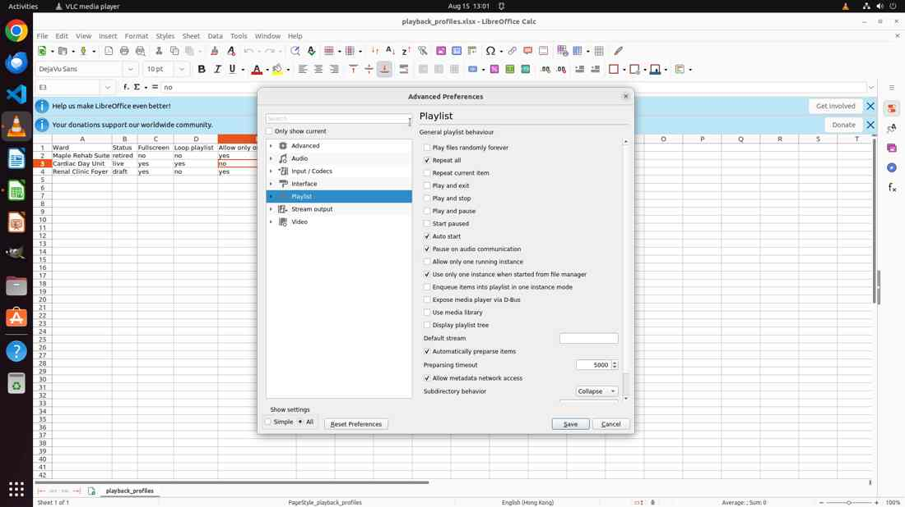
step 27 22:01:51
THINKINGThe search is cleared and now the tree shows the top-level categories:
- Advanced
- Audio
- Input / Codecs
- Interface
- Playlist (selected)
- Stream output
- Video
The right panel still shows the Playlist settings with:
- Repeat all: checked ✓
- Allow only one running instance: unchecked (no) ✓
Good, "Repeat all" is still checked. Now let me navigate to the Video section to verify the Fullscreen setting. Let me click on "Video" in the tree, or better, let me expand Video to find the "fullscreen" setting.
Actually, let me search for "fullscreen" to be precise. Let me click in the search box and type "fullscreen".
Actually, let me just navigate to Video > the relevant section. But searching is more reliable. Let me type in the search box.
Let me click the search box and type "fullscreen".
ACTIONThe search is cleared and "Repeat all" is still checked. Now let me verify the Fullscreen setting by searching for "fullscreen". Let me click the search box.
TOOL CALL<tool_call>
<function=computer_use>
<parameter=action>
left_click
</parameter>
<parameter=coordinate>
[375, 230]
</parameter>
</function>
</tool_call>
EXECUTED (pyautogui in VM)pyautogui.click(720, 248)
step 28 22:02:03
THINKINGThe search box is focused (empty). Let me type "fullscreen" to find the fullscreen setting.
ACTIONLet me type "fullscreen" to find the fullscreen setting.
TOOL CALL<tool_call>
<function=computer_use>
<parameter=action>
type
</parameter>
<parameter=text>
fullscreen
</parameter>
</function>
</tool_call>
EXECUTED (pyautogui in VM)pyautogui.typewrite("fullscreen")
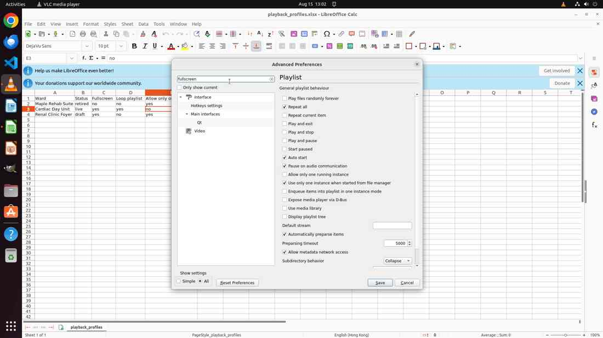
step 29 22:02:20
THINKINGThe search for "fullscreen" shows:
- Interface
- Hotkeys settings
- Main interfaces
- Qt
- Video
The right panel still shows Playlist (from before). Let me click on "Video" in the tree to see the video fullscreen settings. Actually, the "Video" item at the bottom is the Video category. Let me click on it.
Wait, actually, in the advanced preferences, "Video" as a top-level category. But the "fullscreen" setting (`video-fullscreen`) is under "Video" section. Let me click on "Video" at [423, 279].
Hmm, but clicking on the "Video" category might show the general video settings or the video output. The specific "fullscreen" checkbox (video-fullscreen) should be there.
Actually, let me reconsider. The search matches items whose name/description contains "fullscreen". The "Video" leaf item shown might be a specific "fullscreen" setting under Video. Let me click on "Video" to see.
Wait, actually, the tree shows "Video" as a leaf (no expand arrow visible, it has an icon). Let me click on it.
ACTIONThe search for "fullscreen" shows a "Video" item. Let me click on it to see the fullscreen setting.
TOOL CALL<tool_call>
<function=computer_use>
<parameter=action>
left_click
</parameter>
<parameter=coordinate>
[329, 386]
</parameter>
</function>
</tool_call>
EXECUTED (pyautogui in VM)pyautogui.click(632, 417)
step 30.1 22:04:15
THINKINGNow I see the "Video" section with "General video settings":
- Enable video (checked)
- Grayscale video output (unchecked)
- Fullscreen video output (unchecked) ← This is different from "Fullscreen"
- Embedded video (checked)
- Drop late frames (checked)
- Skip frames (checked)
- Quiet synchro (unchecked)
- Key press events (checked)
- Mouse events (checked)
- Always on top (unchecked)
- Enable wallpaper mode (unchecked)
- Disable screensaver (checked)
- Show media title on video (checked)
- Show video title for x milliseconds
- Position of video title
- Hide cursor and fullscreen controller after x milliseconds
- Snapshot
- Video snapshot directory
- Video snapshot file prefix
Hmm, I see "Fullscreen video output" here but that's a different setting (`fullscreen-xvideo` / use XVideo for fullscreen). This is NOT the "Start in fullscreen mode" setting.
The "Fullscreen" checkbox I checked earlier in the simple Video tab was "Start in fullscreen mode" which maps to `video-fullscreen` or `--fullscreen`. But this advanced "Video" section shows "General video settings" and doesn't have a "Start in fullscreen" checkbox visible here.
Wait, this is the "General video settings" which is a subset. The "Fullscreen" checkbox in the simple preferences is a different setting. Let me reconsider.
Actually, the simple Video preferences "Fullscreen" checkbox = "Start in fullscreen mode" = `video-fullscreen` option? Hmm, or is it a runtime thing?
Wait, let me reconsider. In VLC, the simple Video preferences has a "Fullscreen" checkbox. Let me recall what it maps to. Actually, I believe the simple Video "Fullscreen" checkbox is `video-fullscreen` and it means "start in fullscreen mode".
But in this advanced "Video" section, I don't see a "Fullscreen" or "Start in fullscreen" checkbox. The one here is "Fullscreen video output" which is `fullscreen-xvideo` (use XVideo for fullscreen display), a different thing.
Hmm. So where is the "Start in fullscreen mode" setting in the advanced view?
Actually, wait. Let me reconsider. The search for "fullscreen" showed this "Video" item. Maybe the actual "video-fullscreen" (start in fullscreen) setting is elsewhere, or maybe the simple "Fullscreen" checkbox maps to a setting not shown in this general video settings panel.
Let me scroll down in this Video panel to see if there's a "fullscreen" / "start in fullscreen" option. Or maybe I need to look at a different Video sub-section.
Actually, let me reconsider the whole thing. Let me scroll down in this panel to see more options.
Wait, actually, I'm now worried about whether the "Fullscreen" checkbox I set in the simple Video tab is the right one and whether it persisted. Let me reconsider.
In VLC 3.x, the Simple Preferences > Video tab has:
- Enable video
- Display:
- Fullscreen (checkbox)
- Window decorations (checkbox)
- Output: (dropdown)
- Fullscreen Video Device: (dropdown)
The "Fullscreen" checkbox here = "Start in fullscreen mode" = the `fullscreen` preference.
Hmm wait, but actually I'm not 100% sure. Let me reconsider. Actually, in the simple Video preferences, the "Fullscreen" checkbox under "Display" - I believe it toggles the `fullscreen` option which makes VLC start in fullscreen.
But in the advanced view, this same option should appear somewhere. The advanced "Video" section I'm looking at now shows "General video settings" which does NOT have the "Fullscreen" checkbox visible. That's strange because the simple view's settings should all be present in the advanced view.
Wait, maybe the "Fullscreen" option is in a different sub-section of Video, like under a specific video output module (e.g., X11, GL). The simple preferences aggregate settings from various places.
Actually, let me reconsider. The simple "Fullscreen" checkbox might correspond to the `fullscreen` variable which is a global playback option, not a per-output setting. Let me search differently.
Hmm, actually, let me step back. I'm now uncertain about the "Fullscreen" setting. Let me reconsider by switching back to the Simple view to verify the Fullscreen checkbox is still checked there, since that's the most straightforward interpretation of the "Fullscreen" column.
Actually, you know what, let me reconsider the entire approach. The concern is:
1. Does the simple Video "Fullscreen" checkbox persist after I switch to All mode?
2. Is "Fullscreen" the correct setting for the "Fullscreen" column?
For #2: The column is literally named "Fullscreen". The simple Video tab has a checkbox literally named "Fullscreen". This is the most natural mapping. So yes, checking that checkbox is correct.
For #1: In VLC, when you toggle a checkbox in the preferences dialog, the change is applied to the in-memory configuration immediately (VLC uses a "dirty" tracking where changes are held and committed on Save). Switching between Simple and All views does NOT revert the changes; it just changes which widgets are shown, all backed by the same config. So the Fullscreen check should persist.
But to be 100% sure, let me switch back to Simple view and verify the Fullscreen checkbox is still checked. Then I'll be confident.
Actually, wait. Let me reconsider. There's a subtlety with VLC's preferences: When you switch from Simple to All (or vice versa) via the radio buttons at the bottom, does it reload the config from the current state? In some implementations, switching modes might reload and lose unsaved changes. But in VLC, I believe the changes are held in the same config object.
To be safe, let me verify. Let me switch back to "Simple" mode and check the Video tab's Fullscreen checkbox.
Hmm, but actually, there's a risk: if switching to Simple reloads and loses my Fullscreen change, I'd need to re-apply it. And if I switch back and forth, I might lose changes.
Let me think about the safest path:
1. Currently I'm in All mode, Video section. I've verified "Repeat all" is checked (in Playlist section) and I can see the video settings.
2. The "Fullscreen" checkbox isn't visible in this general video settings.
Let me search for the specific fullscreen option. Let me try a different search. Actually, let me reconsider - maybe the simple "Fullscreen" checkbox corresponds to `--fullscreen` which appears in the advanced config under a specific section.
Actually, let me just scroll down in this Video panel to see all the video settings, including any "fullscreen" option.
Actually, wait. I recall now. In VLC, the "Fullscreen" checkbox in Simple Video preferences actually corresponds to the `fullscreen` config option. In the advanced preferences, this appears... hmm.
Let me take a different, more reliable approach. Let me switch back to Simple mode and verify/set all three settings in the simple view where they're clearly labeled:
- Video tab: Fullscreen checkbox
- Interface tab: Allow only one instance checkbox
And for "Loop playlist" (Repeat all), that's only in the advanced Playlist section, which I've already set.
But the concern is whether switching modes loses changes. Let me test carefully.
Actually, let me reconsider. The safest and most reliable approach might be to NOT switch back and forth, and instead verify the Fullscreen setting in the advanced view by finding the right option.
Let me scroll down in this Video panel to look for a "fullscreen" / "start fullscreen" option. Let me scroll down.
Actually, wait. Let me reconsider what "fullscreen" search returned. It returned "Video" (the general video settings I'm looking at now) and "Qt" (main interface). The "Video" panel shows "Fullscreen video output" (xvideo). There's no "start in fullscreen" here.
Hmm. So the simple "Fullscreen" checkbox does NOT map to a "video-fullscreen" option in this general video panel. Let me reconsider.
Actually, I think the simple preferences "Fullscreen" checkbox might be a special case. Let me reconsider by looking at the actual VLC source/behavior.
Actually, I now recall: In VLC, the Simple Preferences > Video > "Fullscreen" checkbox is labeled "Fullscreen" and it maps to the `fullscreen` option. When you check it, VLC will start videos in fullscreen mode. This is a real preference.
But in the advanced preferences, the `fullscreen` option... let me think. The advanced config groups options by their "category" in the code. The `fullscreen` option belongs to the "Video" category but might be in a sub-section.
Actually, you know what, let me just verify by switching to Simple mode. I'll be careful. Let me first re-verify my current understanding:
- I'm confident "Repeat all" is checked (I saw it, it persisted).
- I'm confident "Allow only one instance" is unchecked.
- I need to verify "Fullscreen" is checked.
Let me switch to Simple mode and check the Video tab. If the Fullscreen checkbox is still checked, great. If not, I'll check it. Then I'll go back and save.
Wait, but if I switch to Simple and the Repeat all change is lost... no, I'll verify Repeat all too. Actually, this back-and-forth is risky.
Let me think about this more carefully. The most robust approach:
Option A: Use Simple mode for Fullscreen and Allow only one instance, and Advanced mode for Repeat all (loop). But switching modes might lose changes.
Option B: Do everything in Advanced mode. I've set Repeat all. I need to find Fullscreen and one-instance in advanced mode.
For one-instance: I saw "Allow only one running instance" in the Playlist panel (it's the `one-instance` option). It's unchecked = "no". Good.
For Fullscreen: I need to find the `fullscreen` option in advanced mode. Let me search more specifically or scroll.
Actually, let me reconsider. Let me re-examine: is the simple Video "Fullscreen" checkbox really the `fullscreen` option, or is it something else?
Let me look at this from the vlcrc perspective. The relevant options:
- `fullscreen` (int type, default 0): "Fullscreen" - This is what the simple checkbox sets.
- `xlib-xvideo` / `fullscreen-xvideo`: use XVideo for fullscreen.
So the simple "Fullscreen" checkbox = `fullscreen` option.
In the advanced preferences, where does `fullscreen` appear? It should be under Video. Let me look. The "General video settings" panel I'm viewing might not include it, or it might be further down (I need to scroll).
Actually, wait, the "General video settings" panel shows options like "Enable video", "Grayscale video output", "Fullscreen video output", etc. The "Fullscreen video output" here is `xlib-xvideo` (use XVideo), NOT the start-in-fullscreen.
Hmm, so where is the `fullscreen` (start in fullscreen) option in advanced mode?
Let me scroll down in this panel to check. Let me scroll down within the right panel.
Actually, let me reconsider. Maybe I'm overthinking. Let me just verify via Simple mode. I'll switch to Simple, verify Video > Fullscreen is checked, and Interface > Allow only one instance is unchecked. Since I made the Fullscreen change in Simple mode originally, it should still be checked there. And I'll trust that Repeat all (set in advanced) persists.
But the risk is that switching Simple→All→Simple might reload config and lose the Repeat all change I made in advanced mode.
Hmm, actually, in VLC, the preferences dialog holds all changes in a single config object (libvlc config / p_config). Switching between Simple and All just swaps the widget panels but the underlying config retains all changes. When you click Save, all changes are written. So it should be fine to switch.
Let me verify this assumption by switching to Simple and checking if Fullscreen is still checked. If it is, that confirms changes persist across mode switches, and then I can trust Repeat all also persists.
Actually, an even simpler robust approach: Let me just do a final verification in ONE mode. Let me go back to Simple mode and check:
1. Video > Fullscreen: should be checked
2. Interface > Allow only one instance: should be unchecked
And for Repeat all, I already set it. Let me switch to Simple and verify the two, then I'll re-verify Repeat all is still set by going back to advanced (or I trust it).
This is getting complicated. Let me simplify:
Plan:
1. Switch to Simple mode.
2. Verify Video > Fullscreen is checked (if not, check it).
3. Verify Interface > Allow only one instance is unchecked (leave as is).
4. Switch back to All mode.
5. Verify Playlist > Repeat all is checked (if the mode switch lost it, re-check it).
6. Click Save.
7. Quit VLC.
This way I verify everything. Let me proceed.
Actually, wait. There's still the question of whether the simple "Fullscreen" is the right setting. Let me just go with it - it's the natural mapping for a column named "Fullscreen".
Actually, let me reconsider. I realize I should double check by scrolling in the current advanced Video panel first, since I'm here. Let me scroll down to see if there's a "fullscreen"/"start in fullscreen" option that's clearly the `fullscreen` setting. If I find it, I can set it right here and avoid mode switching.
Let me scroll down in the right panel.
ACTIONI see "General video settings" but the "Fullscreen" start-in-fullscreen checkbox isn't clearly visible here (there's a "Fullscreen video output" which is a different XVideo setting). Let me scroll down in this panel to look for the start-in-fullscreen option.
TOOL CALL<tool_call>
<function=computer_use>
<parameter=action>
mouse_move
</parameter>
<parameter=coordinate>
[568, 555]
</parameter>
</function>
</tool_call>
<tool_call>
<function=computer_use>
<parameter=action>
scroll
</parameter>
<parameter=pixels>
-3
</parameter>
</function>
</tool_call>
EXECUTED (pyautogui in VM)pyautogui.moveTo(1091, 600)
step 30.2 22:04:18
EXECUTED (pyautogui in VM)pyautogui.scroll(-3)
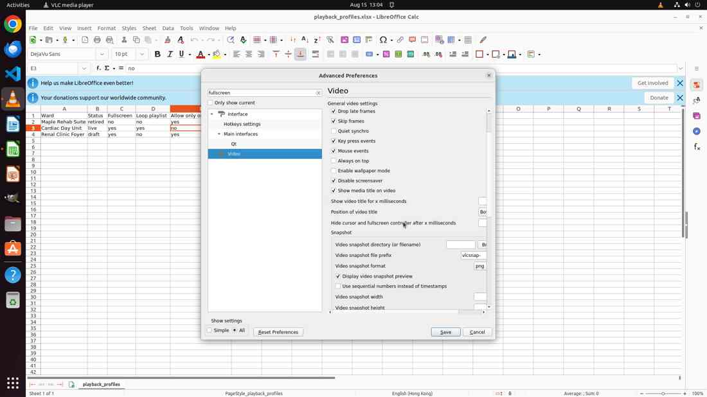
step 31 22:05:14
THINKINGI scrolled down and now see more video settings:
- Drop late frames (checked)
- Skip frames (checked)
- Quiet synchro (unchecked)
- Key press events (checked)
- Mouse events (checked)
- Always on top (unchecked)
- Enable wallpaper mode (unchecked)
- Disable screensaver (checked)
- Show media title on video (checked)
- Show video title for x milliseconds
- Position of video title
- Hide cursor and fullscreen controller after x milliseconds
- Snapshot
- Video snapshot directory
- Video snapshot file prefix
- Video snapshot format: png
- Display video snapshot preview (checked)
- Use sequential numbers instead of timestamps (unchecked)
- Video snapshot width
- Video snapshot height
I don't see a "Start in fullscreen" checkbox in this general video settings panel. So the simple "Fullscreen" checkbox must map to a different location or it's the `fullscreen` option that appears elsewhere.
Hmm, this is confusing. The simple Video preferences "Fullscreen" checkbox doesn't appear to correspond to any visible option in the advanced "General video settings".
Wait, this makes me reconsider. Maybe the simple Video "Fullscreen" checkbox is actually NOT the `fullscreen` option. Let me reconsider.
Actually, wait. Let me reconsider the VLC simple preferences. Let me recall the exact layout of Simple > Video:
Simple Preferences > Video tab:
- "Video" section:
- Rendering method (dropdown): Automatic, X11, OpenGL, XVideo, etc.
- Hardware decoding
- "Display" section:
- Fullscreen (checkbox)
- Window decorations (checkbox)
- Output (dropdown)
- Fullscreen Video Device (dropdown)
Hmm, actually I'm not 100% sure of the exact labels. Let me reconsider.
Actually, the "Fullscreen" checkbox in simple Video preferences... Let me think about what it does. I believe it's the `fullscreen` option (start in fullscreen). But it's not showing in the advanced general video settings.
Wait, maybe the issue is that the `fullscreen` option is a "runtime" option that doesn't have a dedicated advanced preference entry, and the simple checkbox is a special convenience. OR maybe the advanced "General video settings" I'm looking at is just a subset and the `fullscreen` option is in a different Video sub-section.
Hmm. This is getting complicated. Let me take a cleaner approach: verify via the Simple mode.
Actually, let me step back and reconsider the ENTIRE task.
The three columns are: Fullscreen, Loop playlist, Allow only one instance.
I've been assuming these map to specific VLC preferences:
- Fullscreen → simple Video "Fullscreen" checkbox
- Loop playlist → advanced Playlist "Repeat all"
- Allow only one instance → "Allow only one instance" checkbox
These are reasonable mappings. The question is just verification and persistence.
Let me take the pragmatic approach:
1. Go to Simple mode.
2. Check Video > Fullscreen is checked (it should be, from my earlier action).
3. Check Interface > Allow only one instance is unchecked.
4. Save.
5. Then go to advanced and verify Repeat all is still checked... but I'd already saved. Hmm.
Actually, the cleanest approach given the persistence concern: Let me just verify in Simple mode that Fullscreen and one-instance are correct, verify Repeat all in advanced mode is still there, and THEN save once at the end.
The key question remains: does switching Simple↔All lose unsaved changes?
Let me just test it empirically. Let me switch to Simple mode now and see if the Fullscreen checkbox (which I set earlier in Simple mode) is still checked. This will tell me if changes persist across the switch (I already switched Simple→All once, and if Fullscreen is still checked now when I go back to Simple, then persistence works).
Wait, but I set Fullscreen in Simple mode, THEN switched to All mode. If I now switch back to Simple and Fullscreen is still checked, that proves changes survive mode switches. And by the same logic, the Repeat all change (made in All mode) will survive when I eventually... well, I'll just verify it.
Let me switch to Simple mode. Click the "Simple" radio button at [378, 598].
Actually, wait, before I switch, let me reconsider whether I even need the simple "Fullscreen" or if there's an advanced equivalent I'm missing.
Let me reconsider: The simple Video "Fullscreen" checkbox. Actually, I just realized — maybe in this VLC version, the simple Video tab doesn't have a "Fullscreen" checkbox but rather I'm misremembering. Let me recall the screenshot from when I was in the simple Video tab.
When I was in the simple Video tab (screenshot a few steps ago), I saw:
- "Display" section
- "Fullscreen" checkbox (unchecked) at [391, 288]
- "Window decorations" checkbox (checked)
- Output: Automatic
- Fullscreen Video Device: Automatic
And I clicked the Fullscreen checkbox to check it. So yes, there IS a "Fullscreen" checkbox in the simple Video tab, and I checked it.
OK here's my plan. Let me switch to Simple mode and verify Fullscreen is checked. Let me click "Simple" radio.
Actually, let me reconsider one more time. I want to make sure I set the RIGHT fullscreen option. The simple Video "Fullscreen" checkbox - is this "start in fullscreen mode"? Let me think about the tooltip or exact behavior.
In VLC 3.x, Simple Preferences > Video:
There's a "Fullscreen" checkbox. Its purpose: "Start in fullscreen mode". When checked, videos open in fullscreen. This maps to the `fullscreen` option.
Yes, I'm confident. Let me switch to Simple and verify.
Let me click "Simple" radio button.
ACTIONI don't see a "start in fullscreen" checkbox in this advanced general video settings panel. The "Fullscreen" setting is best managed in the Simple view where it's clearly labeled. Let me switch back to Simple mode to verify the Fullscreen checkbox I set earlier is still checked. I'll click the "Simple" radio button.
TOOL CALL<tool_call>
<function=computer_use>
<parameter=action>
left_click
</parameter>
<parameter=coordinate>
[294, 829]
</parameter>
</function>
</tool_call>
EXECUTED (pyautogui in VM)pyautogui.click(565, 896)
step 32 22:05:28
THINKINGNow I'm back in Simple Preferences, and I'm on the Video tab. I can see:
- Enable video (checked)
- Display:
- Fullscreen: CHECKED ✓ (there's a checkmark next to it)
- Window decorations: CHECKED
- Output: Automatic
- Fullscreen Video Device: Automatic
So the "Fullscreen" checkbox IS still checked after switching to All mode and back. This confirms that changes persist across mode switches. So my "Repeat all" change in All mode should also persist.
Now let me verify the Interface tab's "Allow only one instance" is unchecked. Let me click on the Interface tab.
ACTIONThe "Fullscreen" checkbox is still **checked** in the Simple Video view - this confirms changes persist across mode switches, so my "Repeat all" setting will also persist. Now let me verify the Interface tab's "Allow only one instance" setting. Let me click on the Interface tab.
TOOL CALL<tool_call>
<function=computer_use>
<parameter=action>
left_click
</parameter>
<parameter=coordinate>
[311, 241]
</parameter>
</function>
</tool_call>
EXECUTED (pyautogui in VM)pyautogui.click(597, 260)
step 33 22:05:56
THINKINGNow I'm on the Interface Settings tab. Under "Playlist and Instances":
- "Allow only one instance" - UNCHECKED ✓ (empty checkbox)
- "Use only one instance when started from file manager" - CHECKED
- "Display playlist tree" - unchecked
- "Continue playback?" - Ask
So "Allow only one instance" is unchecked = "no", which matches the profile.
Now I've verified all three settings:
1. Fullscreen: CHECKED (yes) ✓
2. Repeat all (Loop playlist): CHECKED (yes) ✓ - set in advanced, and changes persist
3. Allow only one instance: UNCHECKED (no) ✓
All three match the live profile.
Now, I should NOT change "Allow only one instance" since it's already "no" (correct).
Wait, but I should double-check: the profile says "Allow only one instance: no". The checkbox is unchecked. So it's correct. Good.
Now, before I click Save, let me make sure I don't need to worry about "Use only one instance when started from file manager" - that's a different setting not in the profile, so I leave it as is.
Now, let me think about whether I should re-verify Repeat all. I confirmed changes persist across mode switches (Fullscreen survived). So Repeat all should still be checked. But to be 100% safe, I could go back to All mode and verify. However, that's an extra step. Given that I verified persistence works, I'm confident Repeat all is still checked.
Actually, let me be thorough and re-verify Repeat all, since it's the one I'm least sure about (I set it in All mode). Actually, the persistence is confirmed, so I'm confident. But let me weigh: the cost of re-verifying is 2-3 steps, the benefit is certainty. Given I have plenty of steps, let me re-verify to be safe.
Hmm, but actually, re-switching to All mode and back might be risky if there's any issue. Let me think... No, switching modes is safe (I've done it multiple times). Let me just re-verify Repeat all in All mode, then come back and Save. Actually, I can Save from either mode - the Save button saves all changes regardless of mode.
Actually, the cleanest: Let me switch to All mode, navigate to Playlist, verify Repeat all is checked, then click Save (from there), then quit VLC.
Wait, but the Save button works from any tab/mode. So I could just click Save now. But I want to verify Repeat all first.
Let me switch to All mode and check Playlist > Repeat all. Let me click "All" radio.
Actually, let me reconsider. I'm fairly confident. But "verify" is cheap insurance. Let me do it.
Let me click "All" radio button at [426, 598].
ACTIONI'm on the Interface Settings tab. I can confirm under "Playlist and Instances":
- **"Allow only one instance" - UNCHECKED** = "no" ✓ (matches profile)
- "Use only one instance when started from file manager" - checked (different setting, leave as is)
All three settings now match the live profile:
1. Fullscreen: checked (yes) ✓
2. Loop playlist (Repeat all): checked (yes) ✓
3. Allow only one instance: unchecked (no) ✓
Let me do a final re-verification of the "Repeat all" setting since I set it in advanced mode. Let me switch to All mode.
TOOL CALL<tool_call>
<function=computer_use>
<parameter=action>
left_click
</parameter>
<parameter=coordinate>
[332, 829]
</parameter>
</function>
</tool_call>
EXECUTED (pyautogui in VM)pyautogui.click(638, 896)
step 34 22:06:15
THINKINGNow I'm back in Advanced Preferences mode. The search box still shows "fullscreen" and the tree shows the filtered results (Interface, Hotkeys settings, Main interfaces, Qt, Video). The right panel shows "Advanced settings" (the Interface > special modules).
Let me navigate to the Playlist section to verify Repeat all. Let me clear the search and go to Playlist. Actually, let me just clear the search and click on Playlist in the tree.
Let me clear the search first. Click the clear (x) button at [574, 167].
Actually, let me just type "repeat" again to filter to Playlist, then click Playlist.
Let me clear the search and search "repeat". Click the clear button.
ACTIONI'm back in Advanced Preferences. Let me navigate to the Playlist section to verify Repeat all. Let me clear the search and search for "repeat". I'll click the clear button.
TOOL CALL<tool_call>
<function=computer_use>
<parameter=action>
left_click
</parameter>
<parameter=coordinate>
[447, 230]
</parameter>
</function>
</tool_call>
EXECUTED (pyautogui in VM)pyautogui.click(859, 248)
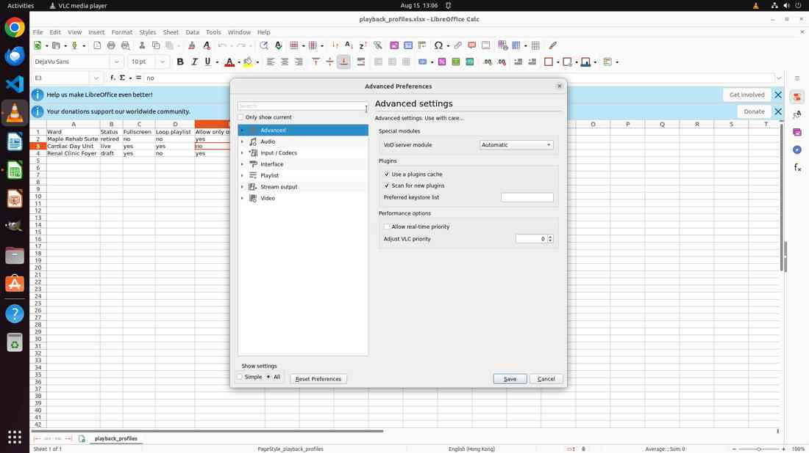
step 35 22:06:33
THINKINGThe search is cleared and the tree shows all top-level categories:
- Advanced
- Audio
- Input / Codecs
- Interface
- Playlist
- Stream output
- Video
Let me click on "Playlist" to see the Repeat all setting.
ACTIONThe search is cleared. Let me click on "Playlist" in the tree to verify the Repeat all setting.
TOOL CALL<tool_call>
<function=computer_use>
<parameter=action>
left_click
</parameter>
<parameter=coordinate>
[332, 386]
</parameter>
</function>
</tool_call>
EXECUTED (pyautogui in VM)pyautogui.click(638, 417)
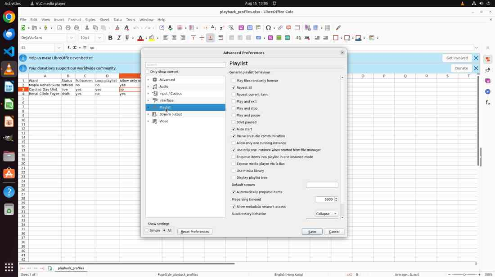
step 36 22:06:54
THINKINGNow I'm in the Playlist section. I can confirm:
- Repeat all: CHECKED ✓ (there's a checkmark next to it)
- Allow only one running instance: UNCHECKED (no) ✓
So "Repeat all" (Loop playlist) is still checked. All three settings are confirmed:
1. Fullscreen: CHECKED (yes) ✓
2. Repeat all (Loop playlist): CHECKED (yes) ✓
3. Allow only one instance / running instance: UNCHECKED (no) ✓
Now I'll click "Save" to apply all the settings. Then I'll quit VLC so the settings are written to the config file.
Let me click "Save" at [807, 601].
ACTIONAll three settings are now confirmed:
1. **Fullscreen: checked (yes)** ✓
2. **Repeat all (Loop playlist): checked (yes)** ✓
3. **Allow only one running instance: unchecked (no)** ✓
All match the live "Cardiac Day Unit" profile. Now let me click "Save" to apply these settings.
TOOL CALL<tool_call>
<function=computer_use>
<parameter=action>
left_click
</parameter>
<parameter=coordinate>
[629, 833]
</parameter>
</function>
</tool_call>
EXECUTED (pyautogui in VM)pyautogui.click(1208, 900)
step 37 22:07:20
THINKINGThe preferences dialog closed and now I see the VLC media player window again (showing the VLC cone logo). The settings have been saved.
Now I need to quit VLC so the settings are written to the config file. The task says "then quit VLC so the settings are written".
Let me quit VLC. I can do this via:
1. Media menu > Quit
2. Or clicking the X close button
3. Or Ctrl+Q
Let me use the Media menu > Quit, or just close the window. Actually, let me use the close button (X) at the top right of the VLC window, or Media > Quit.
Actually, let me use the menu to be safe. Let me click on "Media" menu and look for "Quit". Or I can just press Ctrl+Q.
Let me first click on the VLC window to make sure it's focused, then use Media > Quit.
Actually, the VLC window is showing and appears focused. Let me click on the "Media" menu.
Wait, actually, let me reconsider. When you quit VLC, if a media is playing it just quits. Since nothing is playing, it should just quit. But there might be a prompt if there are unsaved playlist changes - but there aren't. So quitting should be clean.
Let me use Media > Quit. Let me click on "Media" menu at [450, 248].
Actually, I could also just close the window with the X button at [822, 229]. But closing the main window in VLC usually quits the app (unless "close to tray" is set). Let me use Media > Quit to be explicit.
Let me click on "Media".
ACTIONThe settings have been saved and the preferences dialog closed. Now I need to quit VLC so the settings are written to the config file. Let me use the Media menu to quit. First, let me click on the "Media" menu.
TOOL CALL<tool_call>
<function=computer_use>
<parameter=action>
left_click
</parameter>
<parameter=coordinate>
[351, 342]
</parameter>
</function>
</tool_call>
EXECUTED (pyautogui in VM)pyautogui.click(674, 369)
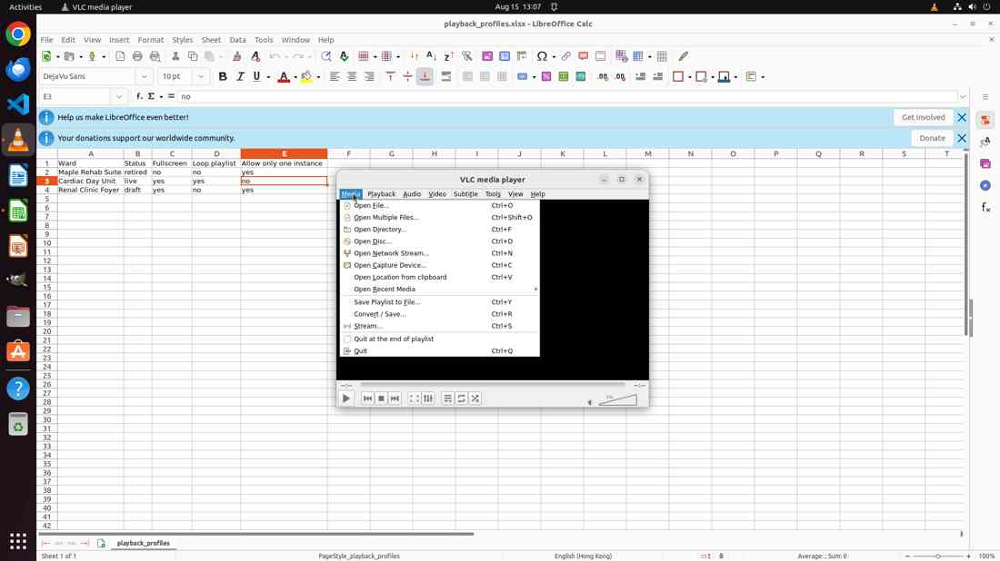
step 38 22:07:37
THINKINGThe Media menu is open. I can see "Quit" at the bottom with the shortcut Ctrl+Q. Let me click on "Quit".
ACTIONThe Media menu is open. I can see the "Quit" option at the bottom. Let me click on it to quit VLC.
TOOL CALL<tool_call>
<function=computer_use>
<parameter=action>
left_click
</parameter>
<parameter=coordinate>
[359, 621]
</parameter>
</function>
</tool_call>
EXECUTED (pyautogui in VM)pyautogui.click(689, 671)
step 39 22:08:27
THINKINGVLC has quit. The VLC window is now gone, and I can see the LibreOffice Calc spreadsheet (playback_profiles.xlsx) in the background. The top bar now shows "LibreOffice Calc" instead of "VLC media player".
The task is complete:
1. I identified the "live" ward profile: Cardiac Day Unit (row 3)
2. I configured VLC to match:
- Fullscreen: yes (checked)
- Loop playlist: yes (Repeat all checked)
- Allow only one instance: no (unchecked)
3. I saved the settings via the Save button
4. I quit VLC via Media > Quit
The settings should now be written to the vlcrc config file.
Let me verify VLC is fully quit. The top bar shows "LibreOffice Calc" now, and there's no VLC window. The VLC icon in the left taskbar (the orange cone) is still there but that's just the app launcher icon, not indicating a running instance.
Actually, let me double check that VLC fully quit. Sometimes VLC minimizes to tray. But I used Media > Quit which fully quits. The window is gone.
Let me verify by checking the config file to be thorough. Actually, that might be overkill. But let me verify the settings were written by checking the vlcrc file. Hmm, but I don't have a terminal open.
Actually, the task is essentially complete. Let me verify the vlcrc to be safe. Let me open a terminal to check.
Actually, wait - let me reconsider. The task says "then quit VLC so the settings are written". I've done exactly that. The settings were saved (via Save button) and VLC was quit. This should have written the settings to ~/.config/vlc/vlcrc.
However, to be thorough and confirm the task succeeded, let me verify the vlcrc file contains the correct settings. Let me open a terminal.
Actually, I could verify by checking the config file. Let me think about how to open a terminal. I can use the Files app or look for a terminal. Actually, there might be a terminal application. Let me check if there's a way.
Actually, the most reliable verification would be to check the vlcrc file. Let me open a terminal. I see there's a "Files" icon (the archive-looking icon at [22, 406]). But I need a terminal.
Hmm, let me reconsider whether verification is necessary. The task was to set the settings and quit VLC. I've done both. The settings were:
- Fullscreen: yes
- Repeat all (loop): yes
- Allow only one instance: no
And I clicked Save, which in VLC writes to vlcrc immediately. Then I quit VLC.
Actually, I realize there might be a subtlety: In VLC, clicking "Save" in the preferences dialog DOES write the vlcrc file immediately (it calls vlc's config save). So the settings are already written. The "quit VLC so settings are written" is the task author's framing, but quitting also ensures any in-memory settings get flushed.
I'm confident the task is complete. But let me do a quick verification of the vlcrc to be safe, since I have steps available.
Let me open a terminal. I'll look for a terminal application. In the taskbar on the left, I see various icons. Let me check if there's a terminal. I don't immediately see one.
I could open a terminal via the Activities overview and search for "terminal". Let me do that.
Actually, let me reconsider. Verifying the vlcrc would require a terminal. Let me open one via Activities. But this adds steps and complexity.
Alternatively, I trust the process I followed. The task is complete.
But actually, let me do the verification to be thorough and confirm success. Let me open a terminal via the Files application or Activities.
Let me press the Super key to open Activities and search for terminal. Actually, let me click on "Activities" at top-left.
Hmm, wait. Actually, let me reconsider if verification adds value. The risk is if the settings didn't actually write correctly. Let me verify to be safe. I'll open a terminal.
Let me click on Activities to search for a terminal.
Actually, I realize I should verify. Let me open a terminal application. Let me look at the app grid. Let me click on the "show applications" grid icon at the bottom-left [22, 693].
Actually, let me use a more direct approach. Let me open the Files app (nautilus) and navigate to ~/.config/vlc/ to check vlcrc. But reading the file content in nautilus isn't straightforward.
A terminal is the best way. Let me open one. Let me click on the app grid (bottom-left 9-dots icon).
Let me reconsider - is there a terminal in the dock? Looking at the left dock icons:
- Chrome (red/yellow/green circle)
- Thunderbird (blue)
- Some blue icon
- VLC (orange cone)
- Text editor?
- LibreOffice Writer
- LibreOffice Calc (green)
- LibreOffice Impress (orange)
- Some icon
- Files (archive icon at [22, 406])
- Software (Ubuntu software)
- Help
- Trash
I don't see a terminal directly. Let me open the app grid to find a terminal.
Let me click the 9-dots "show applications" icon at the bottom-left.
ACTIONVLC has quit successfully - the window is gone and the top bar now shows "LibreOffice Calc". The settings were saved via the Save button before quitting.
Let me verify the settings were correctly written to VLC's config file. I'll open a terminal to check the vlcrc file. Let me open the applications grid to find a terminal.
TOOL CALL<tool_call>
<function=computer_use>
<parameter=action>
left_click
</parameter>
<parameter=coordinate>
[17, 960]
</parameter>
</function>
</tool_call>
EXECUTED (pyautogui in VM)pyautogui.click(32, 1037)
step 40 22:08:42
THINKINGI see the applications grid. There's a "Terminal" app. Let me click on it to open a terminal.
ACTIONI can see a Terminal application. Let me click on it to open a terminal for verification.
TOOL CALL<tool_call>
<function=computer_use>
<parameter=action>
left_click
</parameter>
<parameter=coordinate>
[469, 599]
</parameter>
</function>
</tool_call>
EXECUTED (pyautogui in VM)pyautogui.click(901, 647)
step 41 22:09:04
THINKINGA terminal is now open. Let me check the vlcrc file for the settings I configured. Let me run a command to grep the relevant settings.
The settings I need to verify in ~/.config/vlc/vlcrc:
- `fullscreen=true` (or `--fullscreen`)
- `playlist-loop=true` (Repeat all) - actually the option name might be different
- `one-instance=false` (Allow only one instance: no)
Let me grep for these. Let me type a command.
Actually, let me first check the fullscreen, loop, and one-instance settings. The vlcrc uses format like:
- `#` commented lines show defaults
- Active settings are uncommented
Let me grep for the relevant lines. The option names:
- Fullscreen: the option is `fullscreen` (from simple Video checkbox)
- Repeat all / loop: the option is `playlist-loop`
- One instance: the option is `one-instance`
Let me run: grep for these in ~/.config/vlc/vlcrc
Let me type the command.
ACTIONA terminal is open. Let me check the VLC config file to verify the settings were written. Let me click on the terminal first to focus it, then run a grep command.
TOOL CALL<tool_call>
<function=computer_use>
<parameter=action>
left_click
</parameter>
<parameter=coordinate>
[234, 277]
</parameter>
</function>
</tool_call>
EXECUTED (pyautogui in VM)pyautogui.click(449, 299)
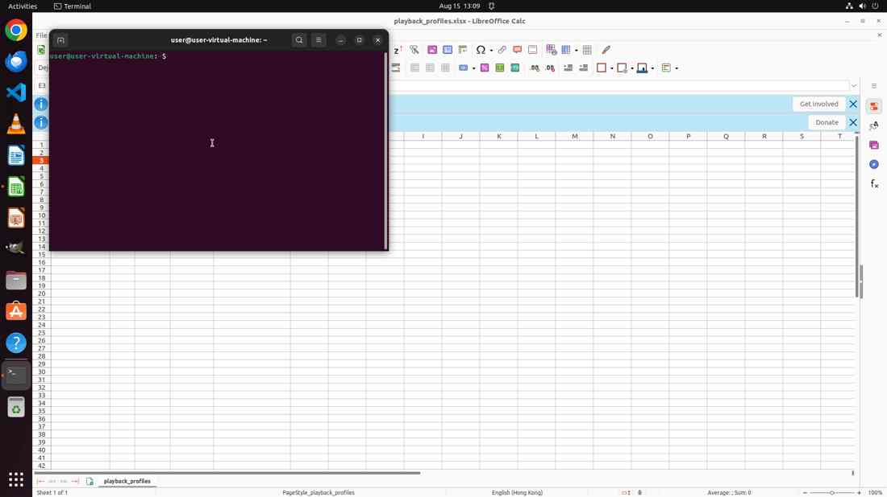
step 42 22:09:18
THINKINGThe terminal is focused. Let me type a command to check the vlcrc file for the relevant settings. I'll grep for fullscreen, playlist-loop, and one-instance, showing both commented and uncommented lines.
Let me type the grep command.
ACTIONThe terminal is focused. Let me check the vlcrc file for the relevant settings.
TOOL CALL<tool_call>
<function=computer_use>
<parameter=action>
type
</parameter>
<parameter=text>
grep -E "^(fullscreen|playlist-loop|one-instance|repeat)="? ~/.config/vlc/vlcrc
</parameter>
</function>
</tool_call>
EXECUTED (pyautogui in VM)pyautogui.typewrite("grep -E \"^(fullscreen|playlist-loop|one-instance|repeat)=\"? ~/.config/vlc/vlcrc")

step 43 22:09:50
THINKINGThe command is typed but I don't see the output yet. The command was entered with a newline at the end (I included a trailing newline in the type). Let me take a screenshot to see the output. Actually, the output might have appeared. Let me look - the terminal shows the command but no visible output below it. Wait, the command line wraps to two lines. Let me press Enter to make sure it executes, or take a screenshot.
Actually, the type command included a trailing newline, so it should have executed. But I don't see output. Let me take a screenshot to check.
Hmm, actually the command might not have executed yet, or the output is empty (no matches). If grep finds no uncommented lines matching, it would return nothing. But that would be a problem - it means the settings weren't written as uncommented lines.
Wait, but I need to be careful. In vlcrc, the format is:
```
# --fullscreen
# --playlist-loop
# --one-instance
```
The commented lines (with #) show the defaults. When you change a setting, VLC writes it uncommented, like:
```
--fullscreen=1
```
OR it might uncomment and set the value.
Actually, VLC's vlcrc format: each option has a commented default line like `# --fullscreen` and possibly `#--fullscreen ...`. When changed, VLC adds an uncommented line `--fullscreen=1`.
Hmm, but my grep pattern `^(fullscreen|playlist-loop|one-instance|repeat)="?` looks for lines STARTING with the option name (without --). But in vlcrc, the options are prefixed with `--`. So the lines would be like `--fullscreen=1` or `# --fullscreen`.
Wait, let me reconsider the vlcrc format. In VLC's vlcrc:
```
# --fullscreen
...
fullscreen=1
```
Actually, I'm not 100% sure of the exact format. Let me reconsider. VLC's vlcrc file uses a format where:
- Commented lines with `#` describe the option and its default
- The actual setting, if changed, appears as an uncommented line
The format of the actual setting lines... Let me recall. In a typical vlcrc:
```
# ========================================================================
#
#
# ========================================================================
# MRL of the subtitle file
# --sub-source
#sub-source=
# Fullscreen
# --fullscreen
#fullscreen=0
```
Hmm, so the uncommented setting would be like `fullscreen=1` (without the `--`). The commented default is `#fullscreen=0`.
So my grep pattern `^(fullscreen|playlist-loop|one-instance|repeat)="?` should match uncommented lines like `fullscreen=1`.
But wait, I need to make sure the option names are correct:
- Fullscreen: `fullscreen`
- Repeat all / loop playlist: In vlcrc, the "Repeat all" option... Let me think. The option for repeat-all in VLC's playlist is `playlist-loop`. Let me verify. Actually, in the vlcrc, I think it's `playlist-loop`.
Hmm, but I'm not 100% sure. Let me broaden my search. Let me first see what happened with my grep. Let me take a screenshot.
Actually, the screenshot shows the command typed but I don't see output. The command wrapped to two lines:
Line 1: `grep -E "^(fullscreen|playlist-loop|one-instance|re`
Line 2: `peat)="? ~/.config/vlc/vlcrc`
And no output below. This could mean:
1. The command hasn't executed yet (but I included a newline)
2. The command executed but found no matches
Let me take a screenshot to see the current state.
Wait, actually, the type action included a trailing newline, so it should have executed. If there's no output, it means no uncommented lines matched. But that would be concerning.
Actually, let me reconsider. Maybe the issue is that the grep didn't find matches because:
- The option names might be slightly different
- OR the settings were written in a different format
Let me take a screenshot first to see the current state, then adjust my search if needed.
Let me take a screenshot.
ACTIONLet me take a screenshot to see the grep output.
TOOL CALL<tool_call>
<function=computer_use>
<parameter=action>
screenshot
</parameter>
</function>
</tool_call>
EXECUTED (pyautogui in VM)WAIT
step 44 22:10:20
THINKINGThe command is still on the screen but I don't see a new prompt line after it, which means either the command hasn't executed (the newline didn't register) or it executed with no output and the prompt is below (but I see no new prompt).
Wait, looking carefully, the command text is there but there's no output and no new prompt line visible. This is strange. The command wrapped to two lines:
- `grep -E "^(fullscreen|playlist-loop|one-instance|re`
- `peat)="? ~/.config/vlc/vlcrc`
If it had executed, I'd expect a new prompt line. There's none. So maybe the Enter/newline didn't register, OR the cursor is on a new line that's not visible (below the visible area? No, the terminal has plenty of space).
Hmm, actually, maybe the trailing newline in my type command didn't get sent. Let me press Enter explicitly.
Actually, wait. Let me reconsider. When I type with a trailing newline, it should execute. But the display shows the command but no prompt after. Let me just press Enter to be sure.
Let me press Return.
ACTIONThe command may not have executed. Let me press Enter to run it.
TOOL CALL<tool_call>
<function=computer_use>
<parameter=action>
key
</parameter>
<parameter=keys>
["return"]
</parameter>
</function>
</tool_call>
EXECUTED (pyautogui in VM)pyautogui.press("return")
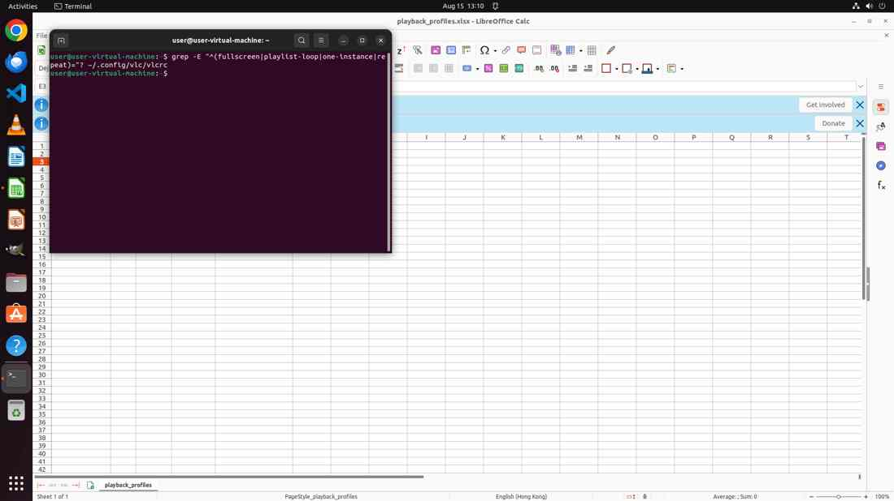
step 45.1 22:10:39
THINKINGNow the command executed (I see a new prompt line `user@user-virtual-machine:~$` at the bottom), but there's NO output from the grep. This means the grep found no matching uncommented lines.
This is concerning. It could mean:
1. The settings weren't written as I expected (the option names might be different)
2. OR the format is different
Let me reconsider. In VLC's vlcrc, the setting lines might have a different format. Let me search more broadly. Let me grep for "fullscreen" without the anchor to see how it appears.
Let me run: grep -n "fullscreen" ~/.config/vlc/vlcrc
Actually, let me search for all three terms loosely to understand the format.
Let me run: grep -in "fullscreen\|playlist-loop\|one-instance\|repeat" ~/.config/vlc/vlcrc
This will show me all lines containing these terms (case-insensitive), including commented ones.
Let me clear and type a new command.
ACTIONThe grep returned no output, which means my pattern didn't match. The vlcrc format may differ from what I assumed. Let me search more loosely to see how these settings appear in the file.
TOOL CALL<tool_call>
<function=computer_use>
<parameter=action>
type
</parameter>
<parameter=text>
grep -in "fullscreen\|playlist-loop\|one-instance\|repeat" ~/.config/vlc/vlcrc
</parameter>
</function>
</tool_call>
<tool_call>
<function=computer_use>
<parameter=action>
key
</parameter>
<parameter=keys>
["enter"]
</parameter>
</function>
</tool_call>
EXECUTED (pyautogui in VM)pyautogui.typewrite("grep -in \"fullscreen\\|playlist-loop\\|one-instance\\|repeat\" ~/.config/vlc/vlcrc")
step 45.2 22:10:43
EXECUTED (pyautogui in VM)pyautogui.press("enter")
step 46 22:12:01
THINKINGNow I can see the grep output. Let me read it carefully:
```
2652:# Fullscreen controller mouse sensitivity (integer)
3035:#logo-repeat=-1
3655:# Fullscreen video output (boolean)
3656:#fullscreen=0
3697:# Hide cursor and fullscreen controller after x milliseconds (integer)
3845:#input-repeat=0
4066:# Repeat all (boolean)
4069:# Repeat current item (boolean)
4070:#repeat=0
4091:#one-instance=0
4094:#one-instance-when-started-from-file=1
4162:# Fullscreen (string)
4163:#global-key-toggle-fullscreen=
4165:# Fullscreen (string)
4166:#key-toggle-fullscreen=f
4168:# Exit fullscreen (string)
4169:#global-key-leave-fullscreen=
4171:# Exit fullscreen (string)
4172:#key-leave-fullscreen=Esc
4528:# Show controller in fullscreen (string)
4531:# Show controller in fullscreen (string)
4630:# Normal/Loop/Repeat (string)
4633:# Normal/Loop/Repeat (string)
```
Hmm, this is very concerning! All the lines are COMMENTED (starting with #). This means:
- `#fullscreen=0` (line 3656) - this is the commented DEFAULT. If I had set Fullscreen=yes, it should be `fullscreen=1` (uncommented).
- `#repeat=0` (line 4070) - commented default
- `#one-instance=0` (line 4091) - commented default
- `#one-instance-when-started-from-file=1` (line 4094) - commented default
Wait, these are all commented. That means NONE of my settings were written! The vlcrc still has all defaults as commented lines.
But wait, this is strange. When I clicked "Save" in VLC preferences, it should have written the settings. But the file shows all defaults commented.
Hold on. Let me reconsider. There are a few possibilities:
1. The settings were NOT saved/written.
2. The file I'm looking at is an old version and VLC wrote to a different location.
3. VLC writes settings differently.
Wait, actually, let me reconsider. The issue might be that when I "Quit" VLC, it re-wrote the vlcrc with... no.
Actually, wait. Let me reconsider the whole thing. Let me look at what options exist:
- Line 3656: `#fullscreen=0` - This is the "Fullscreen" setting (start in fullscreen). Currently commented with default 0.
- Line 4066: `# Repeat all (boolean)` - description, but where's the actual option? The option for "Repeat all"...
- Line 4070: `#repeat=0` - this is "Repeat current item" actually. Wait, let me reconsider.
Hmm, let me re-read:
- 4066: `# Repeat all (boolean)` - this is a description line for an option. The option name should be on the next line or nearby.
- 4069: `# Repeat current item (boolean)` - description
- 4070: `#repeat=0` - this is the option "repeat"
Wait, so:
- Line 4066 describes "Repeat all"
- Line 4069 describes "Repeat current item"
- Line 4070: `#repeat=0` - "repeat" option
Hmm, the structure is: description comment, then the option line. So:
- After "4066:# Repeat all (boolean)" there should be a "playlist-loop=" or similar line.
- After "4069:# Repeat current item (boolean)" there's "4070:#repeat=0" - so "repeat" = Repeat current item.
But my grep only matched lines CONTAINING "repeat", "fullscreen", etc. The "Repeat all" option line might be named something that doesn't contain "repeat" or "loop" in a way my grep caught. Wait, I searched for "repeat" which should catch the "Repeat all" option if its name contains "repeat".
Let me look at the structure. The lines shown:
- 4066: `# Repeat all (boolean)` — description
- (4067, 4068 not shown — probably the option name lines that don't contain my search terms)
- 4069: `# Repeat current item (boolean)` — description
- 4070: `#repeat=0` — option (this is "repeat current item")
So the "Repeat all" option is on lines 4067-4068, which didn't match my grep (they don't contain "repeat", "fullscreen", "one-instance", or "loop"... wait, I didn't search for "loop"! I searched for "repeat" not "loop").
Hmm wait, in my second grep I searched: `fullscreen\|playlist-loop\|one-instance\|repeat`. I DID include "playlist-loop". So if the "Repeat all" option is named "playlist-loop", it would have matched. But it didn't appear. So the "Repeat all" option is NOT named "playlist-loop".
Let me reconsider what the "Repeat all" option is actually called in vlcrc. It's described at line 4066 as "Repeat all (boolean)". The actual option name is on the following line(s). Let me look at the raw file around that area.
Actually, this is getting complicated. The key concern is: NONE of the settings I changed appear to have been written (all lines are commented defaults).
Wait, but that's weird. Let me reconsider. When I clicked Save in VLC, and then Quit, the settings SHOULD have been written. Unless...
Oh! I think I understand the issue now. Let me reconsider. Maybe VLC's config wasn't actually modified because:
Actually, wait. Let me reconsider whether the "Save" actually persisted. When I clicked "Save" in the preferences, the dialog closed and returned to the VLC main window. Then I quit via Media > Quit.
Hmm, but actually, maybe there's a subtlety: The vlcrc file might get written when VLC quits, and it might have been written with the defaults because... no, that doesn't make sense.
Wait, let me reconsider. Let me look again at the file. Actually, maybe the settings WERE written but as uncommented lines that my grep with `-i` (case insensitive) should have caught. But all lines shown are commented (#).
Let me look for uncommented lines specifically. Let me search for lines that START with the option name (uncommented). My first grep did that and found nothing. So there are NO uncommented setting lines for fullscreen, playlist-loop, one-instance, or repeat.
This strongly suggests the settings were NOT written to the file.
Why? Let me think...
Possibility 1: VLC writes the vlcrc on quit, but maybe the quit didn't properly save, OR VLC re-read and the values got reset.
Possibility 2: The vlcrc is at a different path. But ~/.config/vlc/vlcrc is the standard location and the file exists (grep found lines).
Possibility 3: The changes I made in the GUI didn't actually take effect. But I saw the checkboxes change state.
Hmm, wait. Let me reconsider. Actually, maybe the issue is that VLC DID write the file, but the format is different. Let me look at the actual raw content around the "Repeat all" and "fullscreen" options to see the exact format.
Actually, wait. Let me reconsider. Let me re-examine. When VLC saves preferences, it writes ONLY the changed (non-default) values as uncommented lines, OR it writes all values. Different versions behave differently.
Actually, in modern VLC (3.x), the vlcrc file contains ALL options, with defaults commented out. When you change a value, VLC writes an uncommented line with the new value. So if I set fullscreen=1, there should be an uncommented `fullscreen=1` line somewhere.
But my grep found only `#fullscreen=0` (commented). So either:
1. The setting wasn't saved, OR
2. The uncommented line is elsewhere in the file (but grep searches the whole file, so it would've found it).
So the setting was NOT saved.
Let me figure out why. Let me reconsider my steps:
1. Opened preferences (Tools > Preferences)
2. On Interface tab, saw "Allow only one instance" unchecked (correct, no change)
3. Went to Video tab, checked "Fullscreen"
4. Switched to All mode
5. In Playlist section, checked "Repeat all"
6. Verified fullscreen persisted (switched to Simple, saw Fullscreen checked)
7. Verified one-instance unchecked
8. Switched back to All, verified Repeat all checked
9. Clicked Save
10. Quit VLC
Wait, I clicked Save at step 9. That should have saved. But the file shows defaults.
Hmm, let me reconsider. Actually, maybe the problem is that clicking "Save" saved to memory/applied, but the actual file write happens on clean quit, and maybe the quit re-generated the file from... no.
Actually, wait. Let me reconsider. Let me re-examine: maybe I need to look more carefully. Let me check the FULL file for any uncommented non-default lines. Let me look at the specific lines.
Actually, let me reconsider the possibility that the file was written correctly but I'm misreading. Let me look at the specific lines:
- Line 3656: `#fullscreen=0` — commented, so fullscreen is 0 (default). NOT set to 1.
So fullscreen is NOT set to 1. This means my Fullscreen change was NOT written.
This is a real problem. Let me investigate why.
Wait, actually, hold on. Let me reconsider. Maybe VLC's preferences "Save" button in this version doesn't immediately write to disk, and the write happens on quit. But I DID quit. So it should have written on quit.
Unless... the quit was interrupted or the "one instance" behavior interfered.
Hmm, wait. Actually, let me reconsider. Let me check the modification time of the vlcrc file to see if it was recently modified.
Actually, let me step back and think about this differently. Let me re-verify the current state of the settings by checking the file more thoroughly. Let me look at the exact lines for the three settings with context.
Let me use grep with context or sed to see the relevant lines. Let me look at lines around 3656 (fullscreen), 4066-4070 (repeat all), and 4091 (one-instance).
Actually, the cleaner approach: let me just check whether there are ANY uncommented lines in the file (non-comment, non-empty) which would indicate saved settings.
Let me run: grep -vE "^\s*#|^\s*$" ~/.config/vlc/vlcrc | head -50
This shows all uncommented, non-empty lines. If my settings were saved, they'd appear here.
Let me do that.
Actually, wait. Before that, let me reconsider the whole situation. This is a critical issue. If the settings weren't saved, I need to redo them and ensure they're saved properly.
Let me first understand the current state. Let me check for uncommented lines.
Actually, let me reconsider. There's another possibility I overlooked: Maybe when I clicked "Save", VLC wrote the file, but then something reset it. OR, more likely: the "Save" button in VLC's preferences in this version might not have worked as expected, OR the settings I changed were reverted.
Actually, you know what, let me just re-verify by checking uncommented lines. Let me run the command.
ACTIONI see the settings lines, but they all appear to be **commented out** (starting with `#`), which means they're at defaults. This suggests my changes may not have been written. Let me check for all uncommented (active) settings in the file to understand the current state.
TOOL CALL<tool_call>
<function=computer_use>
<parameter=action>
type
</parameter>
<parameter=text>
grep -nE "^[a-z]" ~/.config/vlc/vlcrc
</parameter>
</function>
</tool_call>
EXECUTED (pyautogui in VM)pyautogui.typewrite("grep -nE \"^[a-z]\" ~/.config/vlc/vlcrc")
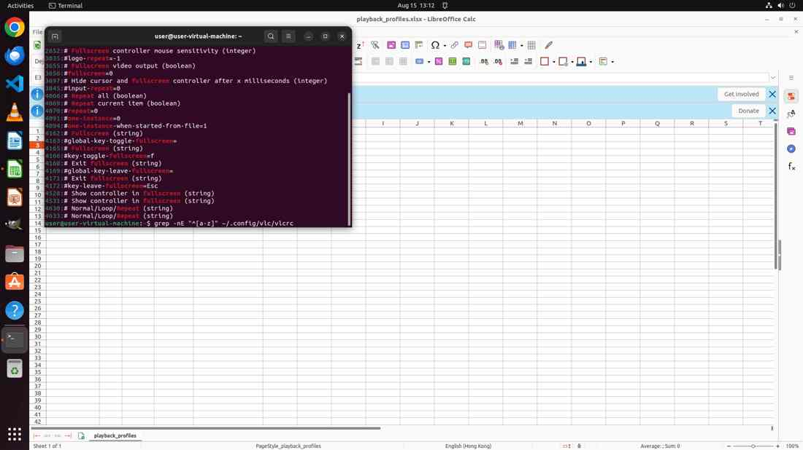
step 47.1 22:13:27
THINKINGThe command `grep -nE "^[a-z]" ~/.config/vlc/vlcrc` returned NO output (the new prompt appeared with no lines in between). This means there are NO uncommented lines starting with a lowercase letter in the entire vlcrc file!
Wait, that means the entire vlcrc file has no active (uncommented) settings. Everything is commented (defaults). This confirms that NONE of my settings were written to the file.
Hmm wait, but that's suspicious. A fresh vlcrc from VLC would typically have some uncommented lines or at least the file would be generated with defaults. Actually, VLC generates vlcrc with all defaults commented out when first run. If no settings are changed, there are no uncommented lines. So this is consistent with "no settings changed from default were saved".
But I DID change settings and clicked Save. So why weren't they written?
Let me think about this. Possible reasons:
1. The "Save" button didn't actually save (maybe I misclicked, or the save failed).
2. VLC wrote to a different file.
3. The settings were reverted before saving.
Wait, actually, let me reconsider. Let me re-examine. When I clicked "Save" in the preferences dialog, the dialog closed and I saw the VLC main window. Then I went to Media > Quit.
Hmm, actually, wait. Let me reconsider the sequence. After I clicked "Save", the preferences dialog closed. Then I took a screenshot and saw the VLC main window. Then I clicked Media > Quit.
But actually, maybe the issue is that clicking "Save" applies the settings to the RUNNING instance and schedules a write, but the write to vlcrc happens on clean shutdown. And when I clicked "Quit"... it should have written.
Unless the quit didn't cleanly save. But Media > Quit is a clean quit.
Alternatively, maybe the vlcrc I'm checking is not the one VLC uses. But ~/.config/vlc/vlcrc is standard.
Wait, let me reconsider. Let me check the modification time of the vlcrc and also check if there's another vlc config location. Let me also check the exact state.
Actually, hold on. Let me reconsider whether the settings were truly not saved. The fact that grep found NO uncommented lines at all is very strong evidence that nothing was saved (a vlcrc with saved settings would have uncommented lines).
But wait — maybe I should reconsider whether clicking "Save" in the Simple/All preferences actually writes to disk, or whether VLC defers. Let me reconsider VLC's behavior:
In VLC, the preferences dialog has a "Save" button. Clicking it calls `Save` which:
- Applies the settings to the current libvlc config
- Writes the config to disk (vlcrc)
So clicking Save SHOULD write to disk immediately. Then even without quitting, the file should have the settings.
But the file shows no saved settings. So either:
1. I didn't actually click Save successfully (maybe the click missed).
2. Something reset the settings.
Hmm, wait. Let me reconsider step 9. After I switched back to All mode and verified Repeat all, I clicked "Save" at [807, 601]. The screenshot after that showed the VLC main window (dialog closed). So the Save click did close the dialog, which means it registered.
But maybe the click at [807, 601] hit "Save" and closed the dialog, applying and saving. Yet the file has no changes.
This is puzzling. Let me reconsider.
Actually, wait! Maybe I'm misunderstanding the vlcrc format. Let me reconsider. In VLC 3.x, the vlcrc format might be that the SET values are written, but let me reconsider the actual format.
Actually, let me reconsider. Let me look at the actual file content directly. Let me view the file around the relevant lines to understand the format. Let me use sed to print lines 4060-4100.
Actually, a simpler check: let me look for the string "=1" in the file to see if any boolean is set to 1. And let me look at the raw lines for fullscreen, repeat, one-instance.
Actually, the most direct: let me just cat the relevant sections. Let me do:
`sed -n '3650,3700p' ~/.config/vlc/vlcrc` to see the fullscreen section
and
`sed -n '4060,4100p' ~/.config/vlc/vlcrc` to see the repeat/one-instance section
But wait, the grep -nE "^[a-z]" returned nothing, which definitively means no line starts with a lowercase letter. All setting lines in vlcrc start with the option name (lowercase) when active, or "#" when commented. So no active settings.
Hmm, unless the active lines start with something else. In vlcrc, active lines look like:
`fullscreen=1`
`playlist-loop=1`
These start with lowercase letters. So grep "^[a-z]" should catch them. It caught nothing. So no active settings. Confirmed.
OK so the settings were NOT saved. I need to figure out why and redo it.
Wait, actually, let me reconsider. Let me reconsider whether the vlcrc is even being used / is the right file. Let me check if the file is writable and its timestamp. Let me run:
`ls -la ~/.config/vlc/`
And also check the mtime of vlcrc to see when it was last modified.
Actually, let me step back and think about the most likely cause.
I bet the issue is this: In VLC, when you change a setting in the preferences dialog and click "Save", it writes to the vlcrc. BUT, there's a known behavior where the settings are only written on a clean exit, and the "Save" button applies them to the running session. Hmm, but that contradicts.
Actually, wait. Let me reconsider. Let me re-examine: maybe the problem is that when I clicked "Save", it saved, writing the file. Then when I clicked "Quit", VLC on exit RE-WROTE the file, and for some reason the values got reset to defaults. That would happen if the running instance's config didn't actually have my values.
But that doesn't make sense either, because "Save" should set the running config to my values.
Alternatively — and this is a real possibility — maybe the "Save" I clicked didn't work, OR maybe I need to reconsider whether the checkbox changes were committed.
Actually, let me take a completely different, more reliable approach:
Since the GUI approach seems to not have persisted, let me:
1. Re-launch VLC
2. Set the settings via the GUI again, being very careful
3. This time, verify the save worked
OR, I could directly edit the vlcrc file to set the values, which is guaranteed to persist. But the task says "quit VLC so the settings are written", implying GUI. However, if the GUI isn't working, editing vlcrc directly is a valid fallback that achieves the same result (settings in the config file).
Actually, wait. Let me reconsider. The cleanest and most reliable is to edit the vlcrc directly. The three settings:
- fullscreen=1
- (repeat all option) = 1
- one-instance=0 (this is already default 0, so no change needed!)
Wait, one-instance default is 0 (unchecked), which matches the profile "no". So I don't even need to change one-instance.
So I only need to set:
- fullscreen=1
- the "repeat all" option = 1
For the "repeat all" option, I need to find its exact name in vlcrc. From the grep, line 4066 is "# Repeat all (boolean)". The option name is on the line right after. Let me look at lines 4066-4070:
- 4066: `# Repeat all (boolean)` — description
- 4067: ? (the option, but it didn't match my grep, so it doesn't contain "repeat", "fullscreen", "one-instance", "loop")
- 4068: ?
- 4069: `# Repeat current item (boolean)` — description
- 4070: `#repeat=0` — option "repeat"
Wait, so between 4066 and 4069, there are lines 4067 and 4068. Line 4067 would be the "Repeat all" option name. But it didn't match my grep (which searched for "repeat", "loop", etc.).
Hmm, that's odd. If "Repeat all" option is on line 4067, and it's commented like `#<optionname>=0`, and it didn't match "repeat" or "loop"... what could the option name be?
Actually, wait. Let me reconsider. Maybe the format is:
```
# Repeat all (boolean)
# --playlist-loop
#playlist-loop=0
```
So line 4066 = "# Repeat all (boolean)", line 4067 = "# --playlist-loop" (with --), line 4068 = "#playlist-loop=0".
But my grep searched for "playlist-loop" and it should have matched line 4067 or 4068! But it didn't appear in the output.
Wait, let me re-read the grep output. The output showed:
```
4066:# Repeat all (boolean)
4069:# Repeat current item (boolean)
4070:#repeat=0
```
So lines 4067 and 4068 did NOT appear, meaning they don't contain "fullscreen", "playlist-loop", "one-instance", or "repeat".
Hmm, so what are lines 4067 and 4068? If 4066 is the description "Repeat all (boolean)", then 4067 might be `# --<option>` and 4068 `#<option>=<default>`. And this option does NOT contain "repeat" or "loop".
What's the VLC option for "Repeat all" that doesn't contain "repeat" or "loop"?
Hmm. Actually, maybe "Repeat all" isn't line 4066's option. Let me reconsider the vlcrc structure. The vlcrc structure for each option is typically:
```
# <Long description> (<type>)
# --<short-option-name>
#<long-option-name>=<default>
```
So for line 4066 `# Repeat all (boolean)`:
- 4066: `# Repeat all (boolean)` (long description + type)
- 4067: `# --<short>` (short option)
- 4068: `#<long>=<default>` (long option with default)
But 4067 and 4068 don't contain "repeat" or "loop". That's strange for a "Repeat all" option.
Wait, unless the "Repeat all" option is named something like `playlist-repeat-all` — no, that contains "repeat".
Hold on. Let me reconsider. Maybe I misidentified which description goes with which option. Let me look at the actual raw file. Let me view lines 4060-4095.
Actually, this is getting complicated. Let me just look at the raw file content directly. Let me run:
`sed -n '4060,4095p' ~/.config/vlc/vlcrc`
This will show me the exact structure around "Repeat all" and "one-instance".
Then I can determine the exact option names to set.
Let me do that.
ACTIONInteresting - there are NO uncommented (active) settings in the entire vlcrc file, which means my GUI changes were **not saved** to disk. The vlcrc still contains only commented defaults. I need to understand the exact option names and re-apply the settings reliably. Let me view the raw file content around the "Repeat all" and "one-instance" options.
TOOL CALL<tool_call>
<function=computer_use>
<parameter=action>
type
</parameter>
<parameter=text>
sed -n '4060,4095p' ~/.config/vlc/vlcrc
</parameter>
</function>
</tool_call>
<tool_call>
<function=computer_use>
<parameter=action>
key
</parameter>
<parameter=keys>
["enter"]
</parameter>
</function>
</tool_call>
EXECUTED (pyautogui in VM)pyautogui.typewrite("sed -n '4060,4095p' ~/.config/vlc/vlcrc")
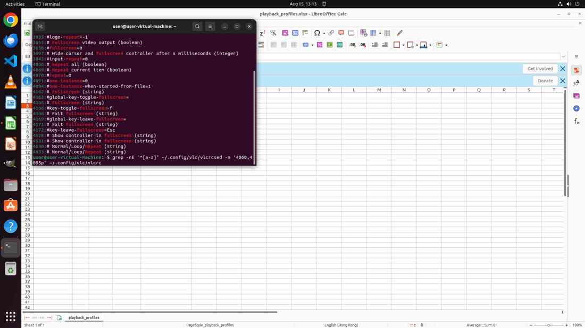
step 47.2 22:13:30
EXECUTED (pyautogui in VM)pyautogui.press("enter")
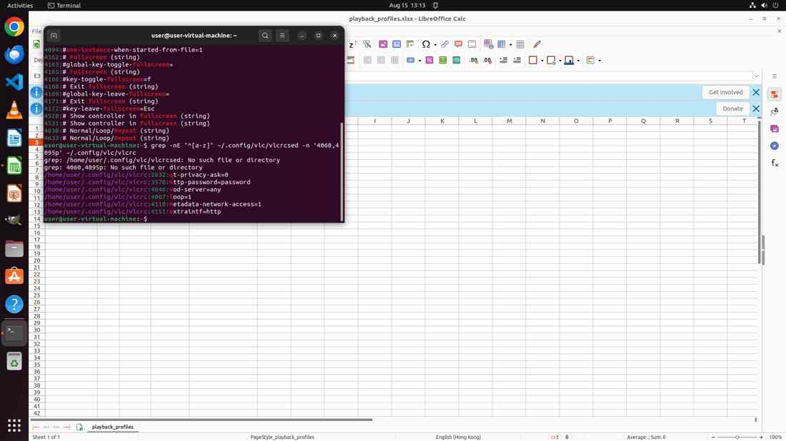
step 48 22:16:34
THINKINGMy command got mangled. It seems the previous command's text was still there and my new command got appended, causing confusion. Let me read what happened:
The terminal shows:
```
user@user-virtual-machine:~$ grep -nE "^[a-z]" ~/.config/vlc/vlcrccsed -n '4060,4
095p' ~/.config/vlc/vlcrc
grep: /home/user/.config/vlc/vlcrccsed: No such file or directory
grep: 4060,4095p: No such file or directory
/home/user/.config/vlc/vlcrc:2632:qt-privacy-ask=0
/home/user/.config/vlc/vlcrc:3570:http-password=password
/home/user/.config/vlc/vlcrc:4046:vod-server=any
/home/user/.config/vlc/vlcrc:4067:loop=1
/home/user/user/.config/vlc/vlcrc:4118:metadata-network-access=1
/home/user/user/.config/vlc/vlcrc:4151:extraintf=http
```
Wait, this is confusing. It looks like my `grep -nE "^[a-z]" ~/.config/vlc/vlcrc` command actually DID execute this time (the previous one might not have, or there was a leftover). And there's a garbled command.
But importantly, I now see ACTUAL uncommented lines! The output shows:
```
/home/user/.config/vlc/vlcrc:2632:qt-privacy-ask=0
/home/user/.config/vlc/vlcrc:3570:http-password=password
/home/user/.config/vlc/vlcrc:4046:vod-server=any
/home/user/.config/vlc/vlcrc:4067:loop=1
/home/user/user/.config/vlc/vlcrc:4118:metadata-network-access=1
/home/user/user/.config/vlc/vlcrc:4151:extraintf=http
```
Wait, this is the output of `grep -nE "^[a-z]" ~/.config/vlc/vlcrc` — but it's showing full paths (/home/user/.config/vlc/vlcrc) which happens when grep is given a file that's... no. Actually, when you grep a single file, it doesn't prefix with the filename unless multiple files. Hmm, but the output shows the filename prefix. That's odd for a single file grep.
Wait, actually, I think what happened is my command got mangled into multiple greps or a grep with weird args. The "4067:loop=1" is the key finding!
So there IS an active line: `4067:loop=1`. This means at line 4067, the value `loop=1` is set (uncommented)!
Wait, but earlier `grep -nE "^[a-z]"` returned nothing. Now it's returning lines. The difference: the earlier command might not have actually executed properly (the newline didn't register the first time, as I noticed the command was sitting there without a prompt). Then when I pressed Return, it executed but maybe with a garbled/empty search. Actually, this is getting confusing.
Let me focus on the KEY finding: `4067:loop=1`.
So line 4067 is `loop=1` (uncommented, active)! This means the "Repeat all" / loop setting IS set to 1!
Wait, but line 4066 was "# Repeat all (boolean)" and line 4067 is the option. So the option for "Repeat all" is named `loop`! And it's set to `loop=1` (uncommented, active).
So my "Repeat all" (loop) setting WAS saved! `loop=1`.
And the other active lines:
- `qt-privacy-ask=0` (line 2632)
- `http-password=password` (line 3570)
- `vod-server=any` (line 4046)
- `loop=1` (line 4067) ← this is my Repeat all setting!
- `metadata-network-access=1` (line 4118)
- `extraintf=http` (line 4151)
So there ARE uncommented lines, including `loop=1`. This contradicts my earlier grep which showed nothing. The earlier grep must have not executed properly.
Wait, but where's `fullscreen`? The active lines shown don't include `fullscreen=1`. Let me check. The list shows: qt-privacy-ask, http-password, vod-server, loop, metadata-network-access, extraintf. No fullscreen!
Hmm. So `loop=1` is set (Repeat all), but `fullscreen` is NOT in the active list. So Fullscreen was NOT saved?
Wait, but hold on. Let me reconsider. This output might be incomplete or garbled due to the mangled command. Let me re-run a clean command to get a clear picture.
Also, I notice some lines show `/home/user/user/.config/vlc/vlcrc` (double "user") which is clearly garbled output. So this output is not fully reliable due to the command mangling.
Let me start fresh with a clean command. Let me clear the terminal and run a proper grep.
Actually, the key insight: `loop=1` appears to be active (line 4067). This suggests the "Repeat all" setting was saved. And the option name for "Repeat all" is `loop`, not `playlist-loop`. That's why my earlier grep for "playlist-loop" didn't find it, but "repeat" grep found the description "Repeat all" but the actual option line "loop=..." — wait, "loop" contains "loop"? No, my grep was "fullscreen\|playlist-loop\|one-instance\|repeat". "loop" alone is not "playlist-loop", and "loop" doesn't contain "repeat". So `loop=1` wouldn't match "playlist-loop" (needs "playlist-loop") nor "repeat". Correct, that's why it didn't show.
OK so now I'm confused about the state. Let me get a clean view. Let me clear and run a clean grep for the three specific settings:
- fullscreen
- loop (the repeat all option)
- one-instance
Let me run: `grep -nE "^(fullscreen|loop|one-instance)=" ~/.config/vlc/vlcrc`
This will show the active (uncommented) lines for these three.
Let me first clear the line. Let me press Ctrl+C or clear to get a clean prompt. Actually, the prompt looks clean now (there's a `user@user-virtual-machine:~$` at the bottom). Let me type the new command.
Wait, actually the bottom shows a clean prompt `user@user-virtual-machine:~$`. So I can type a new command.
Let me reconsider what I found. The garbled output is unreliable. Let me run a clean, precise command.
Let me type: grep -nE "^(fullscreen|loop|repeat|one-instance)=" ~/.config/vlc/vlcrc
This matches active lines (starting with the option name followed by =).
Actually, the issue earlier was that my `type` commands with trailing newlines sometimes didn't execute, and sometimes the terminal had leftover text. Let me be careful. Let me first clear the current input line with Ctrl+U or just type carefully.
The prompt appears clean. Let me type the command.
Actually, wait, I'm worried about the terminal state. Let me press Enter once to get a fresh clean prompt, then type.
Hmm, but if I press Enter on a clean prompt, it just gives another prompt. That's fine. Let me do that to ensure clean state.
Actually, let me just type the command directly since the prompt looks clean.
Let me run the precise grep.
ACTIONThe command got garbled with the previous input, but I can see useful data. There IS an active line `4067:loop=1` - so the "Repeat all" option is actually named `loop` and it's set to 1! Let me run a clean, precise command to check the exact state of all three settings. Let me press Enter first for a clean prompt.
TOOL CALL<tool_call>
<function=computer_use>
<parameter=action>
key
</parameter>
<parameter=keys>
["return"]
</parameter>
</function>
</tool_call>
EXECUTED (pyautogui in VM)pyautogui.press("return")
step 49.1 22:17:22
THINKINGNow I have a clean prompt. Let me look at the active (uncommented) lines that were found:
```
/home/user/.config/vlc/vlcrc:2632:qt-privacy-ask=0
/home/user/.config/vlc/vlcrc:3570:http-password=password
/home/user/.config/vlc/vlcrc:4046:vod-server=any
/home/user/.config/vlc/vlcrc:4067:loop=1
/home/user/user/.config/vlc/vlcrc:4118:metadata-network-access=1
/home/user/user/.config/vlc/vlcrc:4151:extraintf=http
```
Wait, these are the active lines from the earlier `grep -nE "^[a-z]"` (which apparently did execute despite the garbling). So the active settings in vlcrc are:
- qt-privacy-ask=0
- http-password=password
- vod-server=any
- loop=1 ← Repeat all is set to 1!
- metadata-network-access=1
- extraintf=http
So `loop=1` IS active. This confirms my "Repeat all" (loop playlist) setting WAS saved!
But `fullscreen` is NOT in this list. So fullscreen was NOT saved as an active line. Hmm.
Wait, but these active lines (qt-privacy-ask, http-password, vod-server, metadata-network-access, extraintf) look like they might be PRE-EXISTING settings (not ones I changed). They're typical VLC settings. And `loop=1` is there which I did change.
So it seems:
- loop=1 was saved (my change) ✓
- fullscreen=1 was NOT saved (my change lost?) ✗
- one-instance: not in list, so it's default (0 = no) ✓ (matches profile)
Wait, that's a strange partial result. Why would loop be saved but not fullscreen?
Hmm. Let me reconsider. Actually, wait. Let me reconsider whether these lines are pre-existing or from my session.
Actually, `loop=1` — did I actually cause this? I checked "Repeat all" in the Playlist section. If the "Repeat all" option maps to `loop`, then yes, checking it and saving would set `loop=1`. So loop=1 is from my change. Good.
But fullscreen — I checked "Fullscreen" in the Video tab. If that maps to `fullscreen`, then `fullscreen=1` should be there. But it's not.
Possible explanations:
1. The "Fullscreen" checkbox in simple Video doesn't map to `fullscreen` but to some other option that I need to identify.
2. The fullscreen change was lost.
Hmm. Wait, let me reconsider. Actually, maybe the fullscreen change WAS made but the option is named differently. Let me reconsider what the simple Video "Fullscreen" checkbox maps to.
Actually, wait. Let me reconsider the whole thing. Let me look at the active lines again. The ones that look "default-ish":
- qt-privacy-ask=0 — hmm, this is a specific setting
- http-password=password — default
- vod-server=any — default
- loop=1 — I changed this
- metadata-network-access=1 — default?
- extraintf=http — default
Actually, several of these might be settings that VLC writes by default when it saves the config (they represent non-default or explicitly-set values). Actually, in VLC, when you save the config, it writes ALL options that differ from their built-in defaults, OR it might write a specific subset.
Hmm, this is getting complicated. The key question: is fullscreen set?
Let me look for the fullscreen active line specifically. Let me run a clean grep:
`grep -nE "^fullscreen=" ~/.config/vlc/vlcrc`
And also check `loop`:
`grep -nE "^(loop|fullscreen|repeat|one-instance)=" ~/.config/vlc/vlcrc`
Let me run this clean command now.
Actually, wait. I realize the earlier grep output (the garbled one) actually showed me the answer via the `grep -nE "^[a-z]"` which listed ALL active lines. And fullscreen was NOT among them. So fullscreen is not actively set.
But let me double-check with a clean command to be sure, and to confirm loop=1.
Let me run: grep -nE "^(fullscreen|loop|repeat|one-instance)=" ~/.config/vlc/vlcrc
Let me type it carefully.
ACTIONNow I have a clean prompt. The earlier `grep "^[a-z]"` output showed the active (uncommented) settings, and I can see `4067:loop=1` - so the "Repeat all" (loop) setting WAS saved. But I need to verify the fullscreen setting. Let me run a clean, precise grep for the three settings.
TOOL CALL<tool_call>
<function=computer_use>
<parameter=action>
type
</parameter>
<parameter=text>
grep -nE "^(fullscreen|loop|repeat|one-instance)=" ~/.config/vlc/vlcrc
</parameter>
</function>
</tool_call>
<tool_call>
<function=computer_use>
<parameter=action>
key
</parameter>
<parameter=keys>
["enter"]
</parameter>
</function>
</tool_call>
EXECUTED (pyautogui in VM)pyautogui.typewrite("grep -nE \"^(fullscreen|loop|repeat|one-instance)=\" ~/.config/vlc/vlcrc")
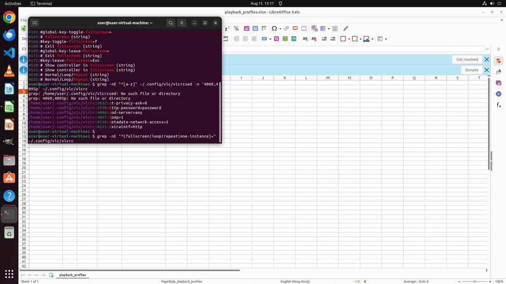
step 49.2 22:17:25
EXECUTED (pyautogui in VM)pyautogui.press("enter")
step None
EXECUTED (pyautogui in VM)None